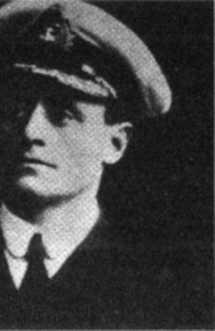
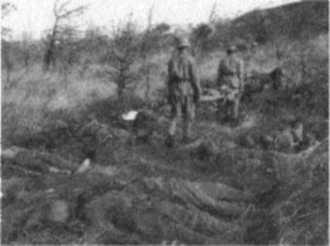

"Hedefime varamadım. Taarruz baĢarısızlıkla sonuçlanmıĢtır"™5*
Lord Kitchener sonucu yumuĢatarak ilgililere bildirdi. Kayıplar konuĢulmuyordu.
Çanakkale'de iĢler iyi gitmemiĢti. Önce Donanma yenilmiĢti. ġimdi de kara ordusu bocalıyordu. Bu son olumsuz sonuç Londra'da durumu az çok bilen politik ve askeri çevreleri çok rahatsız etti. Amiral Fisher öfke ve acıyla bağırdı:
"Kahrolsun bu Çanakkale. Hepimizin mezarı olacak."146
Çanakkale macerasını baĢlatan Churchill bu aĢamada susmak akıllılığını gösterdi. ġöyle düĢünüyordu: Türklerin Ġngiltere ve Fransa gibi dünyaya egemen iki zengin devletin ortak ordusuna uzun süre direnebilmesi doğa yasalarına aykırıydı. Bunlar ilk günlere özgü direnç gösterileriydi.
SavaĢ Hazirana kalmadan sona ererdi.
BaĢbakan SavaĢ Kurulunu 14 Mayıs günü toplantıya çağırdı.
WEBER PAġANIN bütün karargâhı Anadolu yakasından Seddülbahir'e geçmiĢ, son kafile ile Kurmay BaĢkanı Yarbay von Thauvenay da gelmiĢti. Görür görmez YüzbaĢı Mehmet Nihat'a Ģöyle dedi:
"Hayret! Seninkiler bu kez de dayanmıĢlar. Ama ümitlenmemeni tavsiye ederim, gelecek savaĢta paydos derler. Fransızlarla, Ġngilizlerle biz bile zor baĢa çıkıyoruz."
Türklerin paydos demesini önlemek, hiç olmazsa geciktirmek için cepheyi Alçı Tepe'nin eteğine kadar geri çekmek gerektiğini söyledi.147
Bu akla ziyan ve askerlik sanatına aykırı öneri reddedildi. Ama bu gibi kalın kafalılıklara devam edecek, huzur kaçıracaktı. Karargâhta görevli bir Türk subayı arkadaĢlarına dedi ki:
"Bir ağaçkakan bir gün bu zavallının tahta kafasını gagalaya gagalaya delerse ĢaĢırmayın."
Kahkahalar yükseldi. Kaç zamandır Türk subayların güldüğü görülüp duyulmamıĢtı. Bu candan kahkahalar Almanları ĢaĢırttı. Israr ettiler ama nedenini öğrenemediler.
ARIBURNU'NDA iki yan da mevzilerine çekilmiĢti. Bir yandan toprağa gömüldükçe gömülüyor, bir yandan da her uygun yerde ve fırsatta birbirleriyle çatıĢmayı, çekiĢmeyi, boğuĢmayı sürdürüyorlardı.
Bombasırtı en duyarlı yerlerden biriydi. Burası iki yanın mevzilerinin düğümlendiği noktaydı. Her ikisi için de çok önemliydi. Bırakılamaz bir yerdi. Elinde tuttuğu yeri karĢı yana bırakan, cephesini büyük tehlikelere açmıĢ olurdu.
Burada birbirine çok yakın iki siper vardı. Bu iki siper arasında bütün gün, karĢı siperi ele geçirmek amacıyla ya baskına giriĢilmekte, ya el bombası düellosu yapılmaktaydı.
Bitmez bir boğuĢma vardı.
Türkler ya da Anzaklar, bombaları patlamadan yakalayıp geri atmak zorundaydılar. Atamazlarsa bomba patlıyor, siperdekiler parçalanıp havaya uçuyorlardı.
Ġlk sipere gidenlere kurtuluĢ yoktu. Yedek siperde bekleyenler bunu bildikleri için Ģehitliğe hazırlanıyorlar. Ön sipere geçme ânı yaklaĢınca onbaĢı mangasına sesleniyor:
"YoldaĢlar, hazır olun! Erlik günü, memlekete hizmet bayramı geldi!"
Manga ayağa kalkıyor.147"
"Haydi!"
Bağlantı yolundan tek sıra geçerek ön sipere gidecekler. Bunlar da öncekilerden öğrendikleri gibi bağırarak yürümeye baĢlıyorlar:
"YaĢasın vatan!"
Gerideki birlikler boĢalan siperi dolduruyorlar.148
Benzeri olmayan bu kanlı boğuĢmalar, özellikle Anzakları etkilemeye, kafalarını kurcalamaya baĢlamıĢtı: Türkler vatanlarını koruyan, adam gibi dövüĢen, inancı ve vatanı uğruna ölen insanlardı.
Bunu iyi anlamıĢlardı. Peki, kendileri niye hurdaydılar? Niye ölüyor ve öldürüyorlardı?
Kim ve ne adına?
Bu sorular düĢünenleri rahat bırakmaz olmuĢtu.
Bu sırada kayıp listeleri de Avustralya gazetelerinde yayımlanmaya baĢlamıĢtı. Avustralya'nın birbirinden uzak ve ilgisiz kolonilerindeki ailelerden çığlıklar yükseldi. Birbirlerinin çığlıklarını duydular.
Cephede askerler, vatanda aileler, bu soruları sorarak, bu acılardan geçerek kimliklerini bulacak, çağdaĢ, bilinçli bir millet olacaklardı.149
BĠR SAKA neferi Türk mevzilerinin en sağ yanında bulunan Balıkçı Damları yöresinde, savaĢtan uzak, kuytu bir vadide güzel bir su kaynağı keĢfetmiĢti. Sağ yandaki bölüklerin sakaları kaynağa konuĢa konuĢa birlikte gidiyor, birlikte dönüyorladı.
Ta uzakta, herhalde Bombasırtı'nda yine bombaların patladığı bir sabah kaynağa yaklaĢınca apıĢıp kaldılar. Anzaklı sakalar da kaynağı keĢfetmiĢ, bidonlara su dolduruyorlardı.
Ne etmeliydi?
Silahlan yoktu. KuĢkuyla baktılar. DüĢman sakalarının da silahı yoktu. DövüĢmeli miydi? Su için dövüĢmek yakıĢık alır mıydı? Biri fısıldadı:
"Su içene yılan bile dokunmazmıĢ."
Ama geriye susuz da dönülmezdi. Bu sırada düĢman sakaları da Türkleri gördüler. Onlar da bocaladılar. Ne yapmalıydı?
Bidonları hızla doldurup uzaklaĢarak kaynağı Türklere bıraktılar.
Bundan sonra hangi yan erken gelirse öbürü uzakta, görmezliğe gelerek sırasını bekleyecekti.
Yukarılarda, ilerilerde kıyamet koparken, burada gizli su barıĢı sürüp gidecekti.
Ağustosa kadar.
Ağustosta buralar da alt üst olacak, yer yerinden oynayacaktı.
16. TÜMENĠN alayları, yardımcı birlikleri ve ağırlıkları Küçük ve Büyük Anafarta köylerinin yakınlarında, orman içinde toplandılar. Tümen 3. Kolordu emrine verilmiĢti.
Teğmen Faruk arkadaĢı Teğmen Ertuğrul'a kısa bir mektup yazabildi:
"KardeĢim,
Tümen Komutanımız Albay RüĢtü Bey (Sakarya), Kurmay BaĢkanımız YüzbaĢı Nazım Bey galiba hiç uyumuyor. Her dakika uyanık, ayakta, çalıĢkan ve çok dikkatli. CoĢkusu herkese yayılıyor. ġimdilik cephe gerisinde ter atıyoruz. Komutanlığına atandığım takımı çok beğendim. Çukurovalı, yaman delikanlılar. Sabah ve öğleden sonra açık havada eğitimdeyiz. Geceleri dersler, sohbetler. Ara sıra da eğlence. Bizim 48. Alay bu konuda da harika. Alaya bu yüzden 'tiyatro alayı' deniyormuĢ.
Arıburnu cephesinde hepsi Yarbay M. Kemal Bey'e bağlı olan 9 alay birikmiĢ. ġimdi durgunluktan yararlanarak bu cephe yeniden örgütleniyor. Bizim de birkaç gün içinde cephede, ilk çizgide yer alacağımızı söylüyorlar. Hayırlısı.
Okula selam. Gözlerinden öpüyorum.
Bana Boğaziçi kartpostalları yolla"
BOĞAZ kıyısındaki birliklerin Goliath'tan yakınmaları artmıĢtı. Goliath gece ve gündüz aklına estikçe ölüm yağdırmayı sürdürüyordu.
Batmaz bir ada gibi pervasız, rahat bir duruĢu vardı. Ordu bir çözüm bulunması dileğiyle durumu BaĢkomutanlığı bildirdi. Ġlgililer durumu görüĢtüler. Çözüm Goliath'ı batırmaktı.
13.150 tonluk, 750 askerle çekip çevrilebilen, dikkatle korunan dev gemi nasıl batırılırdı? Gemi Geçit'teki tabyalarda bulunan uzun menzilli, özel mermili topların atıĢ alanı dıĢında duruyordu.
Akıntıya birkaç mayın bırakmanın da yararı yoktu. Zırhlının çevresinde torpidobotlar serseri mayın tehlikesine karĢı nöbet tutuyor, dört dönüyorlardı.
Uzun tartıĢmalar sonunda Goliath'ın bir muhrip ile hücum edilerek batırılması kararlaĢtırıldı. Bu çok zor görev için Marmara'da denizaltı kovalayan Muavenet-i Milliye adlı muhrip görevlendirildi.
DüĢmanın haber ve önlem almaması için görev çok gizli tutulacaktı.
Deniz YüzbaĢı Ahmet Saffet Bey'in komutasındaki muhrip, 1910 yapımı, 600 tonluk, hızlı, kıvrak bir gemiydi. Türk donanmasına Donanma Cemiyeti'nin armağanıydı.
Üç torpido kovanı taĢıyordu.
Her gemide Amiral Souchon'un emriyle bir Alman danıĢman bulunmaktaydı.151
Muavenet'teki danıĢman iyi bir silah arkadaĢı olan YüzbaĢı Rudolf Firle'ydi. Mürettebat 94 kiĢiydi.152
Muavenet-i Milliye Muhribi Kaptanı YüzbaĢı Ahmet Saffet Bey Kaptan görevi öğrenir öğrenmez bol kömür, yağ ve yeteri kadar torpil alarak Çanakkale yolunu tuttu.
Mürettebat yine denizaltı kovalamaya gittiklerini sanıyordu.
10 mayıs günü Çanakkale Boğazına girdiler. Gemi Çimenlik tabyasının iskelesine yanaĢıp sessizce durdu. Her gün taĢıt ve hastane gemileri, torpidobotlar, motorlar geliyor, gidiyordu. Bu nedenle dikkati çekmediler.
Kaptan ve YüzbaĢı Firle'ye görev harita üzerinde, ayrıntılı bir biçimde anlatıldı.
Ġmkânsıza yakın zorlukta bir görevdi bu.
Ertesi günü Goliath'ı ve bulunduğu yeri görmeleri için Alçı Tepeye götürüleceklerdi.
Bu sırada BirleĢik Donanma Kurmay BaĢkanı Albay Keyes'in önayak olmasıyla Amiral de Robeck ve öteki amiraller Queen Elizabeth'te toplanmıĢlardı.
Konuyu her açıdan değerlendirdiler ve Çanakkale Boğazı'nın en yakın zamanda donanma ile bir daha zorlanmasını kararlaĢtırdılar.
Bu çok önemli karar onaylanması için Donanma Bakanlığına sunuldu. Denizcilerin bu kararı Bakan Churchill'i çok sevindirdi. Bu öneriyi bütün gücüyle destekleyerek ilk toplantıda SavaĢ Kuruluna sunacaktı.152"
ERTESĠ GÜN Enver PaĢa ünlü kırmızı otomobiliyle Gelibolu'ya, oradan ordu karargâhının bulunduğu Maltepe'ye geldi. KarĢılama töreninden sonra ordu kurmaylığının durum hakkında yaptığı sunuyu dinledi. Sonra Liman PaĢayla baĢ baĢa bir görüĢme yaptı.
Ġkili konuĢma kısa sürdü.
Enver PaĢa, yeni bir tümen ile birkaç ağır top yollayacağını söyleyerek Arıburnu'ndaki düĢmana kesin olarak taarruz edilmesini istemiĢti. Buradaki düĢman sayıca Seddülbahir'deki düĢmandan daha azdı ve kıyıya sıkıĢtırılmıĢtı. Söylendi:
"ġimdiye kadar düĢmanın neden denize dökülemediğine ĢaĢıyorum."
Liman PaĢa durumu anlatmadı ya da anlatamadı.
Taarruza karar verdiler.
Enver PaĢa yanındakilerle birlikte 3. Kolordu Karargâhına uğradı, Kemalyeri'ne gelerek M. Kemal'i ziyaret etti. Buradan Seddülbahir'e geçerek o cepheyi de inceledi. Son olarak Çanakkale'de Cevat PaĢa ile görüĢtü.153
Arkasında hayranlık, korku ve kan kokusu bırakarak ayrıldı.
ENVER PAġA Ġstanbul'a dönerken, görevliler Kaptan Ahmet Saffet ile YüzbaĢı Firle'yi karĢıya geçirerek Alçı Tepeye getirmiĢlerdi.
Hava kararıyordu.
Amaç Goliath'ı ve çevreyi gece görmekti. Alçı Tepe'de birkaç gizli ve güvenli gözetleme yeri vardı.
Bunlardan birinden Seddülbahir'i izlediler. Seddülbahir avuç içi gibi görünüyordu.
IĢıklar içindeki gemiler yarımadanın ucunu bir yarım ay gibi çevirmiĢlerdi. Görüntü bir savaĢa yakıĢmayacak kadar güzeldi.
Goliath'ı ve bulunduğu yeri gördüler. Dev geminin de ıĢıkları yanıyordu. Az dersinde bir ikinci zırhlı daha vardı (Cormvallis). Küçük koruma gemileri çevrelerinde dolanıyordu.
Son mayın hattının bulunduğu yer ile Goliath'ın arasında 10 km bir mesafe bulunuyordu.
Muavenet'in burayı sürekli denetleyen muhrip ve torpidobotlara yakalanmadan geçmesi ve Goliath'a, nöbetçilerini kuĢkulandırmadan yaklaĢması gerekiyordu.
Sonra da geri kaçacaklardı.
Deryadil Kaptan "Görevi yerine getirdikten sonra kaçamayıp batırılsak da olur" diye düĢündü.
Denizcilerin parolası değiĢmezdi: Vatan sağ olsun!
Gece yarısı Kilitbahir'e döndüler. Yayan gidip gelmiĢ, 50 km. yol yürümüĢ, haklı olarak yorulmuĢlardı.
Çanakkale'ye geçtiler.
Gece taĢ gibi uyudular.
12 MAYIS ÇarĢamba günü Mayın Grup Komutanı YüzbaĢı Nazmi Akpınar Muavenete geldi. AkĢam gemiyi mayın hatlarından o geçirecek ve dönüĢlerini bekleyecekti.
Onunla konuĢularak gemi göreve hazırlandı.
Muavenet-i Milliye Muhribi
Gemi son mayın hattını geçtikten sonra iyice kıyıya yakın gidecekti. Geminin dibe değmemesi için kömür ve yağın yarısı gemiden alındı.
90 kilo ağırlığında üç Schwarzkopf torpido, kovanlara yerleĢtirildi. Torpiller 1.200 metre mesafeye, 50
km. hıza ve iki metre derinliğe ayarlandı.
Bütün bataryalara, ıĢıldaklara ve birliklere bilgi verilmiĢti. IĢıldaklar bu gece kullanılmayacak, bataryalar bir terslik halinde Muavenet'i korumak için hazır bekleyeceklerdi. Zor durumdaysa baĢ
tarafından beyaz iĢaret fiĢeği atacaktı.
Duman çıkarmasın diye ocak bastırıldı.
Muavenet olağan bir göreve gidiyormuĢ gibi saat 18.40'da iskeleden ayrıldı. YüzbaĢı Nazmi Bey de birlikteydi. Onun kılavuzluğunda, mayın hatlarının içinden geçilerek karĢı yakaya yaklaĢıldı. Sola dönüldü. Son mayın hattını da gizli geçitten geçtiler. Mayın hatları geride kalmıĢ, Ġngiliz denetimi altındaki kesime gelinmiĢti. Muhrip kıyıdaki bir girintiye sokularak demir attı. Kaptanla Nazmi Bey sarılıp helalleĢtiler.
"Allah muvaffak etsin."
"Amin."
Nazmi Bey gemiyi izleyen motora geçti. Son mayın hattının hizasında Muavenet'in dönüĢünü bekleyecek, mayın hatlarını güvenle geçmesini sağlayacak önlemleri alacaktı.
Bütün batarya ve ıĢıldak gözcüleri gözlerini dört açmıĢ Boğaz'ı gözlüyorlardı. Ġki düĢman muhribi Rumeli, iki muhrip de Anadolu kıyısında nöbetteydi. BeĢinci bir muhrip Boğaz ağzına yakın, ortada dolaĢıyordu.
Muavenet makinelerini susturmuĢ, bütün ıĢıklarını söndürmüĢtü. KonuĢmadan, açıkta sigara içmeden, gece yarısına kadar bekleyeceklerdi. Kaptan ambara topladığı mürettebata görevi açıkladı.
Yatsı namazını birlikte kıldılar ve dua ettiler.
YüzbaĢı Firle gülümseyerek Kaptana sordu:
"Nasıl, bu gece Allah bizi koruyacak mı?"
Kaptan bir Ģey demedi. 'Bizi koru' diye dua etmemiĢlerdi ki. Görevi baĢarmak için yardımını dilemiĢlerdi. Hak etmiĢlerse belki ederdi. EtmemiĢlerse kesin avuçlarını yalarlardı.
Gece yarısı oldu. Seddülbahir'i sarmıĢ olan savaĢ gemilerinin ateĢi kesildi. IĢıkdaklar söndürüldü.
SavaĢ uykuya çekiliyordu.
Hareket saati yaklaĢmaktaydı.
Alçak sis bulutları denize sürünerek Boğaz ağzına doğru akmaya baĢladı. Yıldızlar sönükleĢti. Bu hareketli sis bulutları ve karanlık hava, Muavenet'i saklayacak gibi görünüyordu.
03.00'te demir aldılar.
Muavenet akıntıya kapılmıĢ gibi çok düĢük bir hızla, Rumeli kıyısına değercesine hedefe doğru ilerlemeye baĢladı. Çeyrek saat sonra sol yanda, ağır yolla yaklaĢan iki muhrip belirdi. Arada 600
metre vardı. Muavenet'tekiler de, tüm batarya gözcüleri de titrediler.
Kaptan makineleri durdurttu. Nefesler tutuldu.
Muhripler akıp geçen sis bulutlarının içindeki Muavenet'i fark etmeden, homurdanarak geçtiler.
Makineler yeniden çalıĢtırıldı. Usulca ilerlediler. Goliath'a 300 metre kaldı.
Zırhlının gözcüsü sis içinde hayal gibi görünen Muavenete pırıldakla parola sordu. Muavenet'in iĢaretçisine bu durumda ne yapacağı öğretilmiĢti. Aynı iĢareti tekrarladı, yani o da Goliath'a parola sordu. Bu anlamsız yanıt Ġngiliz gözcüyü ĢaĢırttı. Alarm vermedi.
Dördüncü Bölüm / DiriliĢ Birinci Dönem 202
On saniye kazanmıĢlardı. On saniye yetti.
Ânında fırlatılan üç torpido 50 km. hızla, suyun 2 metre altından dev zırhlıya doğru yol alırken, Muavenet büyük bir hızla çark etti, uzaklaĢmaya baĢladı. Makineler son güçleriyle çalıĢıyor, gemi zangır zangır titriyordu.
Gözcü alarm verdi mi, vermedi mi, anlaĢılamadı. Çünkü üç torpido birden koca Goliath'ı bulmuĢtu.
Korkunç bir patlama oldu. Gökyüzüne alevler, dumanlar, buharlar, demir ve insan parçaları fıĢkırdı.
Saat 01.15'ti.
PatlayıĢın yarattığı deniz ve hava dalgaları Muavenete arkadan çarparak olay yerinden daha da hızla uzaklaĢmasını sağladı.
Dev zırhlı, 750 kiĢilik mürettebatından 570'i ve kaptanıyla birlikte birkaç dakikada battı.
Boğaz kıyısındaki birliklerden, bataryalardan, gözcülerden tekbirler ve sevinç çığlıkları yükseldi.
Kara bela yok olmuĢtu!
Yakın gemiler Goliath'tan denize dökülen 180 kadar denizciyi kurtarmaya çabalıyorlardı. Ġki muhrip Muavenet'in peĢine düĢtü. Dardanos ve BaykuĢ bataryaları, muhripleri ânında ateĢ altına aldılar.
Barbaros zırhlısından da önlerine doğru birkaç baba mermi yollandı. Ġngiliz muhripleri vurulmamak için zikzaklar yapmaya baĢlamıĢlardı.
Muavenet mayın hattına ulaĢtı. Nazmi Bey'in yaktırdığı kırmızı fenere dikkat ederek ilk mayın hattını geçti. Çanakkale adlı küçük bir motor, kırmızı fener göstererek öne düĢtü, Muavenet'i mayın hatlarındaki gizli yollardan geçirerek Havuzlar koyuna getirdi. Muavenet demir attı. Çanakkale'ye geçmeden önce, bu sakin ve güvenli koyda çay molası vermeyi hak etmiĢlerdi.
Nazmi Bey arkadan geliyordu. YetiĢip gemiye çıktı. Kaptanla sımsıkı kucaklaĢtılar:
"Büyük iĢ baĢardınız Ahmet kardeĢim. Gazanız mübarek olsun."
Mürettebat da sıraya girip Kaptanın elini öperek kutladı. YüzbaĢı Firle'yi de kutladılar.
202 DiriliĢ / Çanakkale 1915
Müstahkem Mevki gözetleme yerindeki gözcüler zaferi nöbetçi subaya, o da herkese duyurmuĢtu.
Muavenet-i Milliye sabah Çanakkale'ye geldi. Olayı bilen, haberi duyan asker, sivil herkes kıyı boyunda toplanmıĢtı. Gemi büyük sevinç gösterileriyle karĢılandı. Çanakkale tabyalarındaki subay ve erler de tabyaların önüne, bonetlerin, topların üzerine çıkmıĢ, selam duruyorlardı. Çevredeki gemiler, torpidobotlar, istimbotlar, çatanalar uzun uzun düdük çalarak Muavenet'i ve kahraman mürettebatını kutladılar.154
Goliath olayı savaĢı derinden etkileyecekti.
Ġlk etkisi o gün görüldü: Seddülbahir'i çevreleyen savaĢ gemilerinin sayısı yarıya indi. General Hamilton kara haberi alınca günlüğüne Ģunları yazmıĢtı:
"DüĢman madalyayı hak etti. Kahrolsunlar!"
14 MAYIS 1915 günü, Muavenet Ġstanbul'a dönüĢ yolundayken, Londra'da, BaĢbakanlıkta SavaĢ
Kurulu toplandı.
O kadar sıkı korunan Goliath'ın batırıldığı haberi hükümette ve askeri çevrelerde bomba gibi patlamıĢtı. Bu saklanabilecek bir gerçek değildi. Hiçbir kılıfa sığmazdı.
Amiral Fisher toplantı baĢlar baĢlamaz, Queen Elizabeth'in de batırılabileceği korkusuyla, 'geminin hemen geri çağrılmasını, aksi halde istifa edeceğini' söyledi. Lord Kitchener Ģiddetle karĢı çıktı. Olay
o kadar büyütülecek bir olay değildi. Batan gemi eski bir gemiydi. Kara ve deniz iĢbirliği ile yapılan bir savaĢtı bu ve eldeki en büyük koz da Queen Elizabeth'ti.
TartıĢma BaĢbakanın araya girmesiyle yatıĢtı. Queen Elizabeth'in geri çağrılması, buna karĢılık Çanakkale'deki deniz ve kara kuvvetlerinin güçlendirilmesi, monitörlerin Çanakkale'ye yetiĢtirilmesi kararlaĢtırıldı.154" Boğaz'ın donanma ile yeniden zorlanması önerisi ise, kısa bir görüĢmeden sonra reddedildi. Yeni kayıpların göze alınabileceği bir dönem değildi.
General Hamilton Çanakkale SavaĢı'nı bir an önce bitirmeliydi. Ġngiltere'nin Türkler önünde böyle bir duruma düĢmesine katlanılamazdı.155
GAZETELER Muavenet'in zaferini ve Ġstanbul'a geleceğini yazmıĢlardı.
Halk Boğaz'ın iki yakasında yer yer toplanmıĢ Muavenet'i bekliyordu.
Günlerdir Marmara'da dolaĢan ve hâlâ av arayan E-14 Ġstanbul yolundaki Muavenet'i görmüĢtü ama denizaltı avcısı bir muhrip olduğunu anlayınca saldırmayı göze alamamıĢ, dalıp kaybolmuĢtu. Bir-iki gün daha dolanacak, sonra Çanakkale'den geçip Mondros'a dönecekti.
Halk Muavenet'i candan gösterilerle karĢıladı. Muhribin mürettebatı da bembeyaz üniformaları ile güverteye dizilerek Ġstanbul halkını selamladı.
Boğaz'dan alkıĢlar arasında geçerek demir yeri olan Ġstinye Koyuna yöneldi. Koyda bulunan bütün savaĢ gemileri Muavenet'i sancaklarını toka ederek, düdüklerini çalarak selamladılar.
YüzbaĢı Ahmet Saffet binbaĢılığa yükseltilecek, o ve YüzbaĢı Firle altın madalya, mürettebat gümüĢ
madalya ile onurlandırılacaklar, PadiĢah da ilk cuma selamlığında Kaptan BinbaĢı Ahmet Saffet, YüzbaĢı Firle ve bütün mürettebatı kutlayacaktır.156
Bü zaferde payı olanları hoĢ bir sürpriz daha bekliyordu.
ARDARDA gelen üç darbe Amiral de Robeck'i, kurmaylarını, komutan ve kaptanlarını çok sarstı.
Goliath batmıĢtı. Bu Türklerin Boğaza gömdüğü dördüncü zırhlıydı. BeĢ yüzden fazla usta denizci kaybetmiĢlerdi. Usta bir denizcinin yetiĢmesi yıllar alıyordu.
Queen Elizabeth'i gelen ivedi emir üzerine Ġngiltere'ye yolcu etmiĢlerdi. Demek ki Londra bu güzel gemiyi koruyabileceklerine güvenmiyor, Türklerin bunu da batıracaklarından korkuyordu.
SavaĢ Kurulu Boğaz'ı donanmayla yeniden zorlama önerisini de kesin olarak reddetmiĢti.
Amiral de Robeck
Bu üç olay da onur kırıcıydı.
Son darbe Malta'dan geldi. Malta Komutanlığı 'bir Alman denizanasının Akdeniz'e girdiğinin belirlendiğini, denizaltının Çanakkale'ye gelmesinin olası olduğunu' bildiriyor, Amirali uyarıyordu.
"Lanet olsun!"
Amiral de Robeck Amiral gemisi olarak Lord Nelson'u seçip ona geçti, Arıburnu ve Seddülbahir'i bombardıman eden gemilerin azaltılmasını ve böyle bir olayın bir daha yaĢanmaması için her türlü koruyucu önlemin alınmasını emretti.
200 yıldır yenilmemiĢ olan donanma bocalamaya baĢlamıĢ, komutanlara bir korku basmıĢtı. Ama korkunun ecele faydası yoktu.
Ġki felaket daha yaĢayacaklardı.
BUGÜN Fransız Tümeni Komutanı General d'Amade'ın görevi sona eriyordu. Yerini ünlü General Gouraud alacaktı.
Yeni Komutan ve yeni Kurmay BaĢkanı onarımdan yeni çıkmıĢ olan Charlemagne zırhlısıyla geldiler.
General Gouraud General Hamilton'u ziyaret ettikten sonra cepheye bir göz attı. Cephe çok girintili çıkıntılı idi. ġaĢırdı. Çanakkale'ye özgü savaĢ Ģartlarını ve hallerini zamanla anlayacaktı.
Generale karargâhta durum hakkında bir sunum yapıldı. Acı gerçekler yeni komutanı sarstı: Fransız birliği karaya çıkıĢ gününden bugüne kadar varlığının yüzde 65'ini kaybetmiĢti. Subay kaybı daha yüksekti. Cephe çok tehlikeler atlatmıĢ, Türkler iki kez Morto Koyu'na kadar inebilmiĢlerdi. Bu iki felaketten de donanmanın ve talihin yardımı ile kurtulmuĢlardı.
General sunum sırasında yeni Kurmay BaĢkanına, "Paris'ten yeni birlik, ağır top ve siper topu isteyelim" dedi. Paris'in isteklerini hızla yerine getireceğine güvendiği anlaĢılıyordu.
"Peki Generalim."
General Gouraud
Sunumdan sonra gösteriĢli bir devir-teslim töreni yapıldı. General d'Amade uğurlandı.
General Gouraud Fransız ordusunun en genç ve parlak bir generali, baĢarılı komutanlarındandı. Adı bezgin ve kötümser birliğin moralini düzeltmeye yetecek, yorgun Ġngilizlerde bile Türkleri dize getirecekleri ümidini uyandıracaktı.
BU ARADA, duraklamadan yararlanan Liman PaĢa beklenen düzenlemeyi yaptı, birlikleri dört gruba ayırdı:
Saros Grubu (1. Süvari Tugayı ve 6. Tümen)157
Anadolu Grubu (3. ve 11. Tümen)
Güney Grubu (Weber PaĢa)
Kuzey Grubu (Esat PaĢa).
Arıburnu cephesi doğrudan Esat PaĢa'nın komutasına verilmiĢ oldu. Böylece M. Kemal'in, küçük karargâhı ile 9 alayı birden yönetmek gibi çok zor, yıpratıcı görevi sona erdi. Görevine yalnız 19.
Tümen Komutanı olarak devam edecekti.158
5. Tümen yeniden kuruldu, BaĢına iyi bir komutan olan Yarbay Hasan Basri Bey (Somel) getirildi.
Anafartalar kesiminde bekletilen 16. Tümen cepheye alındı. Arıburnu cephesinin sol yanı onun sorumluluğuna verildi.
Arıburnu cephesi kuzeyden güneye doğru Ģöyle oluĢtu:
19. Tümen (sağ kanat)
5. Tümen (merkez)
16. Tümen (sol kanat).
Bu üç tümen Çanakkale SavaĢı'nın sonuna kadar omuz omuza dövüĢeceklerdir.
DÜZENLEME ve yerleĢim çabaları birkaç gün sürecekti.
Esat PaĢa'nın savaĢ alanına yakın olmak istediği, karargâh için Kemalyeri'ni düĢündüğü öğrenildi. M.
Kemal ile Ġzzettin Bey 19. Tümen Karargâhı için biraz daha ilerde uygun bir yer seçtiler.
Sonra da alay komutanları ile buluĢtular. M. Kemal komutanlara Enver PaĢa'nın ziyareti hakkında bilgi verdi. Kısaca dedi ki:
"Hepinize sevgilerini yolladı. Taarruz etmemizi istiyor. Böyle durulmaz elbette. DüĢmanı temizlemek Ģart. Bu bakımdan haklı. Ama ağır toplar ile yeni, dinç bir kuvvet gelmeden sonuç almak çok zor.
Büyük kayıp veririz. Bu konudaki düĢüncelerimi söyle-dim, yazılı olarak da verdim. Ayrıca düĢmanın bundan sonra bizim kuzeyimize önem vereceğine, çünkü kuzeyde geniĢ manevra .ilanları olduğuna da dikkatini çektim."
Komutanların duraksadığını görünce açıkladı: "DüĢman Seddülbahir'de de, Arıburnu'nda da dar alanda kilitlenip kaldı. Daha kuzeyden bir hareket yaparak bizi kuĢatmak ve Kilitbahir'e ulaĢmak isteyebilir. DüĢman bakımından baĢka bir çözüm yok."159
Her fırsatta haritayı inceleyen, sürekli olasılıkları düĢünen, durumu durmadan her açıdan değerlendiren M. Kemal bir bilici gibi Ağustos ayında olacakları söylüyordu.
Daha kimse farkında değildi.
Gülerek "Bir Ģey söyleyeyim." dedi, "..Cephemize 21 cm.lik güçlü bir havan topu geldi. Küçük bir kusuru var. Sadece 47 mermisi bulunuyor."160
Komutanların sevinç gülüĢleri açmadan soldu.
BĠRAZ SONRA Ġstanbul'da ġehzadebaĢı'ndaki Millet Tiyatrosu'nda, Müdafaa-yı Milliye ve Kadınları Yüceltme Derneklerinin ortaklaĢa düzenledikleri 'yalnız hanımlara mahsus edebiyat müsameresi'
baĢlayacaktı. Davetiye ücretleri yüksek tutulmuĢtu. Günün geliri orduya verilecekti.
Hanımlar kupa, lando, fayton gibi çeĢitli arabalarla geliyor, tiyatronun kapısı önünde inip hızla içeri giriyorlardı. Bir hanımın tramvayla Beyazıt'a gelip buraya kadar yürümesi mümkün değildi. Daha ehlileĢmemiĢ olan birçok erkek ya laf atıyor, ya sarkıntılık ediyordu.
Birçok sanatta o kadar incelmiĢ olan imparatorluğun 450 yıllık baĢkenti, kadına saygı bakımından bu ilkel haldeydi.
Hanımlar yerlerine yerleĢip rahatlayınca peçelerini açıyorlardı. Peçeler gittikçe inceliyordu. Torba çarĢaf denilen hantal, bol, zevksiz çarĢaf yerini Ġstanbul hanımlarının zevkini yansıtan pelerinli, zarif çarĢaflara bırakmıĢtı. Düz potinlerin yerini, ince topuklu iskarpinler alıyordu.
Salon lavanta ve parfüm kokuyordu. Yüksek sesle konuĢan, gülen yoktu.
Kapılar kapandı.
Müsamere tam saat 13.00'te baĢladı.
Müzik bölümü kısa sürdü. Sahneye konuĢmacılar için kürsü taĢındı. Salonda heyecan rüzgârı esti. Bu bölüm için buradaydılar.
Kürsüye önce Halide Edip Hanım geldi. Çok alkıĢlandı. Uyanan, üreten, hayata bir anlam katan, bir iĢi olan, toplum ve yurdu için çalıĢan kadını temsil ediyordu. Çanakkaleden söz etti. Çanakkale deyince zaten herkesin içi titriyordu. Hanımları duygulandırdı, ağlattı, coĢturdu.
Halide Hanım'ı, Ģair Mehmet Emin (Yurdakul) Bey izledi. ġiirleriyle, uyumuĢ, uyutulmuĢ Türklüğü uyandırmıĢtı. Yurtsever Türkler Mehmet Emin Bey'i kutsal bir kiĢi gibi görüyorlardı. Ayakta karĢıladılar, alkıĢa boğdular. Mehmet Emin Bey birçok Ģiirini okudu. Yine ayakta alkıĢlanarak, derin bir saygıyla uğurlandı.
Nezihe Muhittin Hanım yanındaki genç kıza fısıldadı:
"Biz bu Ģairin Ģiirleriyle uyandık, kimliğimizi bulduk. ġiir bu kadar etkili olur mu? Olur. Tam zamanında söylenmiĢse, bir tek dize bile yeter. Belleksiz bir insanın belleğine kavuĢması, kimsesiz bir çocuğun ailesini bulması gibi bir Ģeydi bu. Türk olduğumuzu anladık."
Kürsüye son olarak Türk Ocağı BaĢkanı Hamdullah Suphi (Tanrıöver) Bey geldi. ġık ve kibardı.
Güzel, akıcı konuĢuyordu. Türk dünyasını, Türklerde kadının yerini, kadına verilen önemi, gösterilen saygıyı anlattı. Kadınların minnetini kazandı.
Son olarak Ordu Sinema Dairesinin Çanakkale'de çektiği filmler gösterildi. Mehmetçikler göründükçe alkıĢlar yükseliyordu. Devletin yoksulluğunu belli etmemek için üstü baĢı düzgün askerlerin çekimi yapılmıĢtı.161
Müsamere ikindi vakti sona erdi. Hanımlar peçelerini örttüler, arabalara binerek hemen evlerine döndüler. Bir pastanede, bir otel salonunda, Boğaziçi'nde bir çay bahçesinde oturup da bu güzel, yararlı günü konuĢmak isteseler de bunu yapamazlardı.
Bağnazlık buna izin vermiyordu.
Hamdullah Suphi Bey
ENVER PAġA'NIN Arıburnu taarruzu için Ġstanbul'dan yolladığı 2. Tümenin son birliği de 16 Mayıs günü AkbaĢa indi. Tümen Eceabat'a yakın çiftliklerden birinde toplandı.
Ġstekli, heyecanlı, güçlü bir tümendi. Tümenin bütün birlikleri HaydarpaĢa'dan alkıĢlar, çiçekler, dualar ile uğurlanmıĢ, hanımlar askerlere yine torba torba armağan vermiĢlerdi. Bu incelikleriyle erkek toplumuna örnek ve öncü olmayı sürdürüyorlardı.
Tümen Komutanı
Irak'taki baĢarısızlık üzerine intihar eden Süleyman Askeri Bey'in kardeĢi Hasan Askeri Bey, Kurmay BaĢkanı da YüzbaĢı Kemal Bey'di.
2. Tümenin taĢınması tamamlanınca Liman PaĢa taarruz emrini verdi.
Taarruz 18/19 Mayıs gecesi saat 03.30'da, baskın tarzında yapılacaktı. Taarruzu Esat PaĢa yönetecek, düĢmanı gafil avlamak için hazırlıklar ve hareketler çok gizli tutulacaktı. Taarruza Arıburnu cephesindeki üç tümen ile 2. Tümen katılacak, 2. Tümen düĢman cephesinin merkezine hücum edecekti.
Bu nedenle bu tümene cephenin merkezinde, 5. Tümenle 16. Tümen arasında bir yer, Kanlısırt kesimi ayrıldı.
Taarruzun amacı düĢmanı denize dökmekti.
Arıburnu'nda ilk kez 40.000 savaĢçı toplanmıĢtı. Anzakların sayısı, bir bölümü Seddülbahir'i kaydırıldığı için azalmıĢtı. Bu savaĢ sırasında en fazla 17.000 kiĢi olacaklardı. Ama siperleri çok iyi berkitmiĢ, kaleye çevirmiĢlerdi. Makineli tüfekleri çoktu. SavaĢın sonunu da bu canavar silahlar belirliyordu.
Anzaklara, görünmeden Türkleri izleyebilmeleri ve vurabilmeleri için siper periskopları ile aynalı tüfekler verilmiĢti. Bunlar Türklerin hiç bilmediği Ģeylerdi.
Anzaklar periskopla Türk siperlerini görünmeden gözetliyorlar KOLORDUDAN görevliler, 2. Tümen Komutanı, Kurmay BaĢkanı ile alay ve tabur komutanlarına cephede yerleĢecekleri yeri ve düĢman mevzilerini gösterdiler.
Tümen 18 Mayıs günü, görülmemek için cepheye hava kararınca yanaĢacak ve ay batınca Kanlısırt'taki ön siperlere sessizce yerleĢecekti.
2. Tümenden Anzak cephesini yarması bekleniyordu.
Bazı komutanlar bunun baĢarılabilmesi için askerlerin teslim alacakları siperlerde bir gece kalmalarını, siperlere, alıĢmalarını, düĢman mevzilerini, aradaki alanı gündüz gözüyle görmelerini, bunun için taarruzun bir gün sonraya ertelenmesini önerdilerse de, artık saat kurulmuĢ iĢliyordu, öneri reddedildi.
Bu büyük taarruzu yönetecek olan Esat PaĢa da, yerleĢmek üzere karargâh subaylarıyla birlikte Kemalyeri'ne geldi.
Bir sürprizi vardı.
Ġki karargâhın önde gelen subayları biraradayken, güzel bir konuĢma yaptı. M. Kemal'e, 'bu cephedeki baĢarısının bir kanıtı ve Arıburnu savaĢlarının bir anısı olarak' PadiĢah adına bir altın liyakat muharebe madalyası verdi. Bu en yüksek düzeydeki madalyaydı ve Çanakkale'de ilk kez veriliyordu.162
Bu değer bilirlik M. Kemal'i mutlu etmiĢti. Uykusuzluktan zayıflamıĢ, kanı çekilmiĢ yüzünü bir pembelik kapladı. Saygıyla teĢekkür etti.
M. Kemal ve karargâh subayları, Kemalyeri'ni Esat PaĢa ve karargâhına bırakarak yeni karargâha taĢındılar.
18 MAYIS Salı
Bugün yoğun bir gün olacaktı.
E-14 uzun süre Marmara'da kalmasına rağmen, Ġstanbul'dan Çanakkale'ye asker, yiyecek, mühimmat ve silah akıĢını durdurmayı baĢaramamıĢtı. Buna karĢılık Marmara kıyıları ve Ġstanbul limanı hakkında çok bilgi toplamıĢ, Türklerde denizaltı korkusu yaratarak akıĢı yavaĢlatmıĢtı.
Görevi sona ermiĢti.
Bugün sabah ustaca Boğaz'ı geçip su üzerine çıktı. E-14'ü gören gemiler bu kahraman denizaltıyı sevgiyle selamladılar. Öğle yemeğini Albay Keyes ve sıradaki denizaltının komutanı BinbaĢı Nasmith ile yedi. BinbaĢı Nashmith'e gerekli bilgileri verdi. BinbaĢı Nasmith sabırsızlanmıĢtı. Yemek biter bitmez izin isteyip kalktı.
Gece E-11 markalı denizaltısı ile yola çıkacaktı. E-11 önceki denizaltılardan daha geliĢmiĢ bir gemiydi.
Ġki periskopu ve daha çok torpili vardı.
Türklerin baĢına çok sorun açacaktı.
Esat PaĢa da bugün öğleden sonra, taarruza katılacak bütün tümenlerin Kurmay BaĢkanlarını yeni karargâhında, Kemalyeri'nde topladı. Kurmay BaĢkanlarına taarruzla ilgili açıklamalarda bulunuldu.
Kurmay BaĢkanlarının çoğu, birliklerin yeni yerlerine alıĢabil-meleri için taarruzun bir gün erte-

lenmesini uygun görmekteydiler. Ama Esat PaĢa ertelemeyi kabul etmedi. Liman PaĢa taarruzun gününü, saatini, taarruz düzenini yazılı olarak bildirmiĢti BinbaĢı Nasmith
"Taarruz bu gece yapılacak!"163
"Peki efendim."
Bugün Arıburnu'ndaki birlikler de akĢama kadar son hazırlıkları yaptılar. Süngüler bilendi. Tüfekler elden geçirildi. Yedek çamaĢırı olanlar değiĢtirdiler. Olmayanlar çamaĢırlarını yıkayıp kuruttular, temiz temiz giydiler. Para, gümüĢ sigara tabakası, yavuklu mendili, tespih, köstekli saat, ağızlık gibi Ģeyler bölük katibine bırakıldı.
Erlerin önünde koĢacak olan takım ve bölük komutanları da kılıçlarını temizleyip parlattılar.
Hava kararınca 2. Tümen yola çıktı. Karanlığa rağmen, dikkati çekmemek için parça parça yürüyorlardı.
Bunca özene, dikkate rağmen Anzaklar uyanmıĢlardı. Çünkü Türk cephesindeki yer değiĢtirmeler balon ve uçaklarla saptanmıĢtı. Uçaklar bir büyük birliğin AkbaĢa indiğini ve yakın bir yerde toplandığını da keĢfetmiĢlerdi. Birliklerin yer değiĢtirmesi de istenildiği kadar sessiz olmamıĢtı.
Anzak Kolordusu yarı alarma geçmiĢ, geliĢmeleri bekliyor, sürekli takviye alıyordu.
2. Tümenin alayları cephe gerisinde yemek yedi ve dinlendi. Ay batınca ön siperleri oradaki birliklerden teslim alacak ve birkaç saat sonra taarruz edecekti.
Ay 11.35'te battı.
Siperleri teslim alma ve yerleĢme iĢi sessiz yapılamadı. Ön siperlere, taarruz edecek iki alayın yerleĢmesi gerekiyordu. 2. Tümene ayrılan cephenin geniĢliği, bu kesimdeki arazinin özelliği gereği, 600-700 metre kadardı. Bu geniĢlik 6.000 kiĢiye yetmedi, dar geldi. Yığılma, sıkıĢma oldu. Çekilenler ile gelenler karıĢtılar, yollar tıkandı. Asker heyecanlandı, savaĢ havasına girdi. Tekbirler, dualar, naralar, marĢlar yükseldi. Bazı askerler aĢka gelip düĢman mevzilerine ateĢ ettiler. O sıkıĢıklık, karıĢıklık içinde subaylar bu erken coĢkuyu çabuk bastıramadılar.
Daha Çanakkale askeri olmamıĢlardı. SavaĢ öncesi ağırbaĢlılığının, sessizlik içinde savaĢa hazırlanmanın tadını bilmiyorlardı. YaĢarlarsa öğreneceklerdi.
Anzaklar Türklerin taarruz edeceklerini anlamıĢlardı. Silah-baĢı ettiler. Beklemeye baĢladılar.
Taarruzun baskın niteliği kalmamıĢtı.
BÜTÜN SĠPERLERDE takım ve bölük komutanları askerlerini taarruza hazırlıyorlardı. Kimi çoluk çocuk sahibi, kimi ge-pegenç askerleri ölümün yüreğine yürüteceklerdi.
16. Tümenin 47. Alay takım komutanlarından Teğmen Mehmet Fasih de askerlerinin ortasındaydı.
Sağındaki solundaki askerlerine alçak sesle seslendi:
Teğmen Mehmet Fasih
"ArkadaĢlar! Süngülerinizi bir daha yoklayın.Yuvalarına oturmuĢlar mı? Ġyi bakın. DüĢmana koca bir kaya parçası gibi yükleneceğiz. Geri kalan kusurunu kanıyla öder. Benim de bir adım geri kaldığımı görürseniz, ilk süngüyü bana saplayın!"163"
Zaman gözyaĢı gibi aktı.
Saat 03.25.
BeĢ dakika sonra siperlerden fırlayacaklar. Herkes son duasını etti. Saat 03.30! "Haydi!"
Bütün birlikler aynı anda siperlerden fırladılar. Emir gereği, savaĢ çığlıkları atmadan, ince, uzun süngüleri önde, baskın ümidiyle sessizce ilerlediler.
Hücum mesafesine gelince siperlere dalmak için koĢacaklar, Anzak makineli tüfeklerinin yoğun, kesintisiz, dehĢet verici ateĢiyle karĢılaĢacaklardı.
Ancak birkaç birlik bazı yakın siperlere girebildi. Ama onlar da ileri gidemeyecek, çapraz ateĢ altında kalarak bir süre sonra geri çekileceklerdi.
2. Tümenin taarruzu da sessiz olmadı. Boru takımları hücum havası vuruyor, tümen bandosu 'vatan marĢı'nı çalıyordu. Hücum birlikleri coĢku içinde, birbirlerini izleyerek dalga dalga düĢmana doğru akıyorlardı.
2. ve 5. Tümen birliklerinden geriye uzunca zaman bilgi gelmedi.
Bu durum alay komutanlarını yanılttı. Merkezdeki birliklerin ılıiĢman mevzilerine girdiklerini, cephenin içine doğru ilerlediklerini sandılar. Tümen Komutanlarına bu tahminlerini bildirdiler. ()nlar da bu bilgiyi Kolorduya geçtiler. Esat PaĢa sevindi: Anzak cephesi yarılıyordu.
Ama gerçek çok farklıydı.
Geriye bilgi gelmiyordu, çünkü bilgi verecek kimse yoktu, hepsi Ģehit olmuĢtu. Genç subaylar ve askerler ateĢe koĢan gece kelebekleri gibi kavrulmuĢ, Anzak siperleri önünde düĢüp kalmıĢlardı.
Mevzileri ağır topla dövülemediği için Anzak savunması cephenin her kesiminde çok canlıydı.
Fedai birlikler de bu yüzden baĢarılı olamadı. Yalnız en güneyde bir fedai grup iki makineli tüfek ele geçirebilmiĢti.
Gün iĢiyordu.
2. Tümen Komutanı Kolorduya Ģu raporu yolladı: "Bütün ihtiyatlar harcandı. Kayıp çok ağır.
Siperlerimizi savunmaya çalıĢacağız."
Taarruzun vurucu kuvveti olan 2. Tümen bu duruma düĢmüĢtü.
Esat PaĢa daha ilk yönetiminin sonuçsuz kalmasını içine sin-dirememiĢti. Mazeret dinlemeyen Liman PaĢanın kendisini yetersiz, çekingen ve kararsız bulması olasılığından da kaygı duyuyordu. Bu nedenle taarruzu sürdürmekten yanaydı. Kurmayının uyarısıyla Liman PaĢaya durumu bildirerek onayını istedi. Liman PaĢa taarruz edilmesini hemen onayladı.
Gündüz olmuĢtu.
Bütün birliklere yeniden taarruza geçmeleri emredildi.
Bu emir tartıĢılmadı. Türk ordusunu Türk ordusu yapan demir disiplin gereği, bütün birlikler hiç mızıldanmadan, sızlanmadan, nazlanmadan, yeniden taarruz düzeni aldı. Sağ kalabilmiĢ genç subaylar ya da astsubaylar, çavuĢlar, üç saattir durmadan mücadele etmiĢ, nice silah arkadaĢının toprağa düĢtüğünü görmüĢ, yorgun, uykusuz, çoğu yaralı bereli askeri taarruza kaldırdılar.
Filo tüm toplarıyla Türk cephesinin iki kanadını ateĢ altına aldı. Makineli tüfekler her yerden yine ölüm yağdırmaya baĢladı.
Dördüncü Bölüm / DiriliĢ Birinci Dönem 210
Anzaklar hücum etmeyi sürdüren Türkleri Ģimdi, gündüz gözüyle, görerek vuruyorlardı. Hiçbir mermi boĢa gitmiyordu. SavaĢ insan avına dönüĢtü.
Kimi birliklerin varlığı sona eriyor, kiminin gücü tükeniyordu. Taarruz gittikçe ağırlaĢtı. Bazı yerlerde durdu. Siperler arasındaki alan, ağır yaralı ve Ģehit binlerce Türkle dolmuĢtu. Esat PaĢa saat 10.00'da 7 saate yakın süren taarruzu, daha doğrusu kıyımı durdurdu.
Birliklerden kayıp listeleri geldi, birleĢtirildi. Sonuç acımasızdı: 4.000 Ģehit, 6.000 yaralı!
Kurmay BaĢkanı Fahrettin Bey gözyaĢlarını tutamadı.164
ANZAKLAR Türk taarruzu durunca, bazı yerlerde karĢı taarruza geçtiler.
Yorgun, sayıca azalmıĢ Türkleri bastırıp geri sürerek geniĢlemek, rahatlamak istiyorlardı. Her yerde geri püskürtüldüler. Bu taarruzları birçok kez denediler ama sonuç alamadılar.
57. Alayın cephesine gece de saldırmaya baĢladılar.
Alay, siperlerin yakınında yatan Ģehitleri toplayıp gömmek, yaralılarının bakımını yaptırmak, siperlerini derleyip düzenlemek istiyordu. Ama Anzaklar soluk aldırmıyordu.
57. Alayın savaĢa girdiği ilk gün yaralanmıĢ olan 1. Tabur Komutanı YüzbaĢı Zeki (Soydemir), alaya birkaç gün önce dönmüĢtü.165 Alay Komutanı H. Avni Bey Zeki Beye, "ġunları durdur!" dedi.
"Emredersiniz!"
1. Taburun ilk askerlerinin çoğu Ģehit olmuĢ, ağır yaralılar daha iyileĢip geri dönememiĢlerdi. Ama sağ kalmıĢ genç subaylar yeni askerleri de kısa sürede, gece-gündüz, siperler içinde çalıĢtıra çalıĢtıra, konuĢa konuĢa Çanakkale askeri yapmıĢlardı.
Zeki Bey taburunun üç bölüğünü karĢı taarruz için ayırdı. Bölük ve takım komutanlarını topladı, taarruzla ilgili teknik bilgiler ve emirler verdikten sonra dedi ki:
"Bunlara hadlerini bildireceğiz. Askeri hazırlayın!"
"BaĢüstüne."
Anzaklar çok inatçıydılar. Gece yarısı yeni bir taarruza daha kalkıĢtılar. Tabur, cephesine yaklaĢan Anzakları bekliyordu. Bıçak gibi bir ses geceyi yırttı:
"Haydiiii!"
Bölükler siperlerden fırladılar ve Anzaklara doğru koĢmaya haĢladılar. Süngüler ay ıĢığında gümüĢ
izler bırakıyordu.
KarĢılaĢmaları korkunç oldu. Ġlk sıradaki Anzakları devirdiler ve birliğin içine daldılar. O iyi dövüĢen, cesur, iri yarı, sağlam Anzaklar bu hız ve hırs karĢısında çaresiz kaldılar. Beklenmedik bir Ģey oldu. Bazı Anzaklar Ģaka olsun diye öğrendikleri iki Türkçe sözcüğü bu kez korku içinde bağırarak kaçıĢtılar:
"Türkler geliyor!"
Anzaklar çözülmüĢlerdi zaten, toptan kaçmaya baĢladılar.
57. Alay bugün de çok Ģehit vermiĢti. Bir çavuĢun komutasındaki üç manga, bunun hıncıyla Anzakların peĢine takıldı. Yakaladıklarını bitiriyorlardı. Kaçanlarla birlikte tepelerden aĢağıya, karanlığa, ölümsüzlüğe koĢtular, bilinmeze karıĢtılar ve komutanları M. Kemal'in anılarında yer aldılar.
Anıtları bu oldu.166
ĠSTANBUL'DA hayat halk için gittikçe zorlaĢmaktaydı.
Fiyatlar katlanarak yükseliyordu. Darlık, kıtlık, karaborsa baĢlamıĢtı. Memura, emekliye aylığı, esnafa geliri yetmez olmuĢ, devlet memura aylığını yine her ay ödeyemez duruma düĢmüĢtü.
SavaĢ cana ve paraya doymuyordu.167
Büyük sorun erkekleri askere alınmıĢ ailelerin durumuydu. Kadınların açtığı bazı iĢyerleri birçok kadını ve çocuğunu aç kalmaktan kurtarmıĢtı ama sırada daha on binlerce kadın, yardım bekleyen on binlerce aile vardı.
Kadının evde oturmasını savunagelmiĢ olan anlayıĢ bu soruna çözüm bulamıyordu. Kadın evde nasıl aç oturacaktı? Erkekler askerde olduğu için kadınların yapabileceği birçok iĢ vardı ama kökleĢen anlayıĢ kadınların bu iĢleri yapmasına izin vermiyordu. Sadakayla, komĢu yardımıyla ne kadar yaĢanırdı?
Orhan'la Dilber'in aileleri konuĢmadan anlaĢmıĢlardı. Orhan'a belli etmeden sofralarını basitleĢtirdiler. Bu tutumlu davranıĢla Orhan'ı iyi beslemeyi sürdürebileceklerdi.
Dördüncü Bölüm / DiriliĢ Birinci Dönem 211
Ġstanbul'un bir de ikinci yüzü vardı:
Pera Palas, Tokatlıyan, Ġngiliz Oteli gibi otellerin salonları, Maksim gibi gazinolar, Beyoğlu'ndaki müzikli cafeler, eğlence evleri yeni, görgüsüz ve hödük savaĢ ve iktidar zenginleri, yiyiciler ve bunların beslemeleriyle dolup taĢıyordu. ġu sıra en eğlenceli, hovarda, cümbüĢlü baĢkent Ġstanbul'du.
Doğu Ekspresi her gün Sirkeci garına Avrupa'dan, Ģarkıcı, dansçı, çalgıcı olduklarını söyleyen güzel kızlar getiriyordu. Çoğu ince soyguncu, aptal erkek avcısı, bir bölümü de casustu.
Bu yeni zenginlerin hanımları da bir baĢka âlemdi. GösteriĢten kaçınma, dikkati çekmeme, ölçülülük gibi yüzyılların eseri birçok inceliği, giyimde kuĢamda, konuĢmada yaĢamada çiğneyip geçmiĢlerdi.
Birbirleriyle ve geçmiĢleriyle yarıĢıyorlardı.
Zariflik sanarak, janjanlı, desenli, püsküllü, atlas, kadife, tafta çarĢaflar giydiler, Ģıklık diye Viyana'dan parlak, çarpıcı renkte ayakkabılar getirttiler. Bu tür ayakkabıları hafifmeĢrep kadınların giydiklerini bilmiyorlardı.
Dindarların gözlerini boyamak için de evlerinde ara sıra mev-lid okutuyorlardı. Bunlar çok gösteriĢli oluyordu.
SavaĢ, Ģehitler, yaralılar, kadınların sorunları, pahalılık, yoksulluk, devletin durumu bu hanımları hiç ilgilendirmiyor, rüküĢlüğün, türediliğin, görgüsüzlüğün Ģaheserini yazıyor, kendilerine, savaĢa ve iktidara tapıyorlardı.
Utanmak diye bir duygu bilmiyorlardı.167*
E-ll DENĠZALTISI Boğaz'ı rahatça geçmiĢ, Marmara adası yakınında bir gün dinlenmiĢti. Türk denizaltı avcılarına yakalanmamak için birçok inceliklere baĢvurarak Ġstanbul'a yaklaĢtı.
Bakırköy'ün önünde Peleng-i Derya adında bir torpidobot vardı (deniz panteri). Buradaki barut fabrikasını korumakla görevliydi. 6 tane topu bulunuyordu.
Barut fabrikası yalnız barut üretmiyordu. Trenle bir Alman mühendis, birçok mermi ustası, iĢçisi ve parçalanarak karıĢık bir biçimde sandıklara yerleĢtirilmiĢ gerekli araç ve makineler gelmiĢti.
Levazımcı Topal Ġsmail Hakkı PaĢanın adamlarının Romen ve Bulgar gümrükçülere ve demiryolculara, zorluk çıkarmamaları için yüklü rüĢvet dağıttığı duyulmuĢtu. PaĢa rütbesi verilen bu mühendisin yönetiminde burada ve az ilerdeki Zeytinburnu'nda bulunan atölyelerde, top mermileri de yapdıyordu. Çoğu patlamayan niteliksiz mermilerdi ama hiç yoktan iyiydiler.168
Deniz poyraz yüzünden köpüklüydü. Torpidobotun gözcüleri denizaltının periskobunu fark etmediler. Nashmith torpidobota ilk torpilini yolladı. Gözcüler yaklaĢan torpili son anda görebildiler:
"Torpiiiiil!"
Gemi demirli olduğu için kaçamadı. Görevliler topların baĢına koĢtular, ateĢe baĢladılar. Torpil dokunur dokunmaz küçük geminin altını parçalamıĢtı. Batmaya baĢladı. Topçular topların baĢından ayrılmadılar, su topların kundağına çıkana kadar ateĢi sürdürdüler, denizaltının bir periskopunu vurdular. Denizaltı tek gözlü kaldı.
Peleng-i Derya güzel Bakırköy koyunda battı.
Kıyı bataryaları da ateĢe baĢlamıĢtı. Denizaltı derine dalıp kayboldu. E-11 Marmara'da 25 Mayısa kadar birkaç taĢıt gemisi batıracak, 25 Mayıs günü Ġstanbul limanına dalacaktı.
ARIBURNU'NDA siperler arasındaki alanda binlerce Ģehit kalmıĢtı.
Konu büyük komutanlara yansıdığı için kısa, basit bir ateĢkes yapılamamıĢ, ateĢkes konusu büyük bir olay olmuĢtu. GörüĢler, yazıĢmalar günlerdir sürüyordu.
GüneĢ kızgın, hava sıcaktı.
Cesetler kokmaya baĢlamıĢ, kara sinek bulutları oluĢmuĢtu. Sinekler durmadan çoğalıyor, yemek yemeğe, uyumaya fırsat
Dördüncü Bölüm / DiriliĢ Birinci Dönem 212
vermiyorlardı. Asker kaputunu, ceketini baĢına çekip öyle yeme yiyebiliyordu. Eğer küçük bir aralık kalmıĢsa, kara sinek sürüsü buradan içeri dalıyor ve yemeğe ortak oluyordu. Bu iğrenç sorunu bit sorunu izleyecekti. Çünkü su yalnız içmek içindi.
AkĢama doğru, görüĢmelerin sona erdiği, ertesi gün ateĢke sin uygulanacağı bildirildi.
Hazırlık baĢladı.
Ordu deposunda birkaç yeni er üniforması kalmıĢtı. AteĢkes te görev alacak askerlere bu yeni üniformalar dağıtıldı. DüĢmanın, askerleri o yamalı, lekeli giysiler, ip ya da Ģerit dolanmıĢ yarım postallar ile görmesi doğru olmazdı.
NESRĠN'E arkadaĢı Vedia akĢam üstü eski bir dergi getirip verdi, "Beyaz Konferanslar baĢlıklı yazıyı oku.." dedi, "..roman hatta masal gibi. ġaĢıracaksın. Sana vereceğimi anneme söyledim, haberi var.
Uzun zaman sende kalabilir."
Nesrin yemekten sonra odasına çekildi, yatağa girdi. Kadın adlı bir derginin 1911 yılının Ocak ayı sayıĢıydı. Beyaz Konferansları anlatan hanım adını vermemiĢti. Sadece adının baĢ harflerini belirtmiĢti: P.B.
Bir süre yazara bir ad yakıĢtırmaya çalıĢarak oyalandı: Pakize, Perihan, Perizat, Piraye, Pervin, Peride, Perran.. Sonunda yazara Perican adını uygun gördü.
Perican Hanım zengin bir ailenin kızı olmalı. Kadın hareketi öncülerinden yazar Fatma Aliye Hanıma hayran. Bir köĢkte, hatta bir konakta oturdukları, ailenin Perican Hanım'a güvendiği ve destek verdiği anlaĢılıyor. Perican Hanım'ın bir hayali var. Alt kattaki büyük salonun duvarları, tavanı, kapısı beyaza boyansa.. Perdeler de, panjurlar da beyaz olsa.. Salona birçok beyaz koltuk, iskemle ve beyaz bir kürsü yerleĢtirilse.. Çağrılacak konuk hanımlar da beyaz giysi ve beyaz baĢörtüyle gelseler.
Kadınlara yakıĢan bu bembeyaz, tertemiz dünyada akıllı, bilgili bir kadın, kadın sorunlarını anlatsa, tartıĢsalar. KonuĢa konuĢa uyansalar. Sonra baĢka kadınları da uyandırsalar.
Bu hayalini ailesine açıyor. Aile kabul ediyor. Büyük salonu istediği gibi bembeyaz yaptırıyorlar.
Perican Hanım birçok kadına çağrı mektubu yolluyor. 'Kadınlığın altı bin yıllık karanlığına bir mum ıĢığı verebilmek için' birçok yerden iki yüz elli hanım geliyor. Hepsi beyaz giysili ve beyaz baĢörtülü.
Nesrin heyecanlandı.
Ne kadar olağanüstü, düĢ gibi bir görünümdü bu.
Perican Hanım yazısında bu toplanıĢı 'Doğu dünyasının ilk kıçlın toplantısı' olarak niteliyor. Salon dolunca konuĢmacı giriyor. Beyaz elbiseli, baĢı açık, otuz yaĢlarında, solgun bir hanım. Perican Hanım heyecandan titreyen bir sesle konuĢmacıyı tanılıyor:
"Fatma Nesibe Hanımefendi."
Biri alkıĢlayarak kalabalığa yol gösteriyor. AlkıĢlamayı yeni yeni öğreniyorlar. Çünkü daha 1910
yılındayız. KonuĢmacıyı alkıĢlıyorlar. Fatma Nesibe Hanım baĢıyla selam vererek kürsüye geliyor, konuĢmaya baĢlıyor. Süslü, biraz ağdalı ama çok etkili, sert bir konuĢması var.
Kadınların sorunlarını sıralıyor. Kapkara bir durum. Salon acı, isyan ve çaresizlik içinde dinliyor.
"Sizlerin oldukça katlanılır bir hayatınız var. Çevrenizden biraz daha aĢağıya baksanız, gözleriniz kararır, tüyleriniz ürperir. Kadın, hiçbir hakkı, onuru, hürriyeti olmayan, aĢağılanan, dayak yiyen,

erkeğin dilediği anda 'boĢsun!' deyip kapının önüne atabildiği zavallı bir yaratık, bir esir, hizmetçi, ırgat, çocuk makinesi."
Ağlayanlar oluyor.
Fatma Nesibe Hanım erkek bencilliğine, kadın haklarına direnen anlayıĢa çatıyor, "Bizi mazlum, küflü, sefil, cahil, aciz, kendilerine muhtaç bırakmak istiyorlar!" diyor.
Uzun süren konuĢmasını Ģöyle bitiriyor:
"Bizim için bir sorun da erkeklerin esiri, oyuncağı, mülkü olmayı kabul eden, bu durumu savunan, bu hali dinin gereği sanan kadıncıklarımızın varlığıdır. Böyle sanmaları isteniyor, bu telkin altında ezilip kalıyor, özgürlükten, eĢitlikten korkuyorlar. Kara çarĢafa bürünüyorlar. Bu bir giyim değil, erkeklerin bizi canlı can lıyken, ölmüĢüz gibi bedenimize doladıkları kara kefendir..
..Ama bir gün gelecek, bu gece sona erecek, güneĢ doğacak. Tüm kadınlığımız uyanacak, dirilecek.
'Seni boĢarım' diyen diller kuruyacak, tekmelemek için kalkan ayaklar kırılacak. Erkekler karĢılarında her söze aldanır, her Ģeye katlanır, saf, cahil, dünyadan habersiz kadınlar bulamayacaklar.
Ey yirminci yüzyıl! Sen kadın yüzyılısın. Seni kutsuyorum. Kadın devrimi bir erkek devrimi gibi kanlı ve vahĢi olmayacak. Tersine, böyle beyaz, temiz, sessiz ve verimli olacak. KurtuluĢa yürüyoruz.
Buna inanınız hanımlar!"
Hanımlar ağlıyor, alkıĢlıyor ve inanıyorlar.169
Nesrinin de gözleri doldu. Bu kahraman kadınlara imrendi. Kimbilir belki Vedia'nın annesi de bu
'beyaz kadınlar'dan biriydi. Söylemezdi ki. Bir de kendi annesini düĢündü. SavaĢ çıkınca en çok
"Eyvah, Seylan çayı gelmeyecek" diye üzülmüĢtü.
Perican Hanım yazısında böyle on kez daha toplanıldığını belirtiyordu. Ertesi günü okumayı sürdürmek üzere ıĢığını söndürdü. Dua etti:
"Benim güzel, canım Allahım, hem Çanakkale hem kadın hakları savaĢını kazanalım! Ne olur!"
ATEġKES kararlaĢtırılan kurallar içinde sabah baĢladı.
Yüzler ilaçlı bezlerle örtülerek binlerce Ģehit toplanıp gömüldü. Gömülmeden önce düğmelerine bağlı meĢin künyeler toplanıyordu.
ġehit oldukları Harbiye Nezaretince ailelerine bildirilecekti.
Cesetler arasında henüz ölmemiĢ üç ağır yaralı askere rastlandı. BeĢ gündür aç, susuz, güneĢ altında ölüme karĢı koymuĢlardı. Sedyeci erler iki yaralıyı ağlayarak geriye taĢıdılar. Doktorlar hayatı bırakmayan bu askerleri kurtarmak için seferber oldular.
Ġki yandan da bazı üst subaylar er giysisi giyerek, uzaktan da olsa birbirlerinin mevzilerine gizlice bir göz atmak fırsatını buldular.
Görevli Anzak askerleri ile Türk askerlerinin iĢaret diliyle sohbet ettikleri, düğme, çikolata, sigara, kuru üzüm gibi küçük armağanları, anmalıkları değiĢ tokuĢ ettikleri, gurbette karĢılaĢmıĢ iki arkadaĢ
gibi gülüĢtükleri görüldü.
AteĢkes, akĢam kararlaĢtırılan saatte sona erdi. Ġki yan da kurallara uyarak siperlerine çekildi.
Sekiz saat bir tek tüfek bile patlamamıĢ, bir kiĢi bile ölme-miĢti. Ön siperlerden birinde, aralarında Boyabatlı Mustafa'nın da bulunduğu askerlerin akılları karıĢmıĢtı. Açığa çıkılmıĢ, düĢmanla yan yana durulmuĢ, yardımlaĢılmıĢ, sohbet edilmiĢti. KomĢu olmuĢlardı artık. ġimdi birdenbire düĢmanlık baĢlar mıydı? Bu kadar dostluktan sonra ateĢ edilebilir miydi? Boyabatlı Mustafa yüreği akarsu gibi temiz bir Anadolu çocuğuydu. "Durun hele.." dedi, "bir bakayım Ģu gâvurcuklara, onlar ne ediyorlar?"
Siperden baĢını çıkardı. Bir tüfek patladı. Boyabatlı Ömer oğlu Mustafa sipere düĢtü. BaĢından vurulmuĢtu.
ArkadaĢları sınırsız bir öfke içinde silahlara sarılıp karĢı yanı ateĢe boğdular.
SavaĢ yeniden baĢladı.
ġehit Boyabatlı Mustafa'nın cebinden Çanakkale Destanı çıktı. Kilim gibi, türkü gibi, oya gibi, Kerem’le Aslı hikâyesi gibi Anadolu iĢiydi. Nakaratı siperden sipere, bütün Çanakkale birliklerine yayıldı:
Bugün bizden vatan razı olacak Asker Ģehit, ordu gazi olacak..."0
25 MAYIS Salı günü öğleye doğru Kaptan Nashmith E-11 ile Ġstanbul Boğazı'nın Marmara'ya açılan ağzına yaklaĢtı. Cesaret edip su üstüne çıksa, kulenin kapağını açıp o noktadan çıplak gözle bakabilse, Sarayburnu'nu, Boğaz'ı, Kızkulesi'ni ve Asya yakasını görür, bu eĢsiz, görkemli güzelliği ölümle kirletmekten kaçınırdı.
Ama onun iĢi yakıp yıkmaktı.
Periskobu su üstünde olarak ilerledi. Büyük bir gözükaralıkla Ġstanbul limanına daldı. Galata rıhtımına yanaĢtırılmıĢ iki gemiye Çanakkale'ye gidecek 1. Tümen birlikleri bindiriliyordu. Bu fırsatı kaçırmadı.
Ġki torpil yolladı.
ġimdi gemiler, askerler, toplar, mermiler, fiĢekler, arabalar, atlar havaya uçacaktı. Zarar görmemek için hızla geri çekildi.
Torpillerden biri rıhtıma, ikincisi gemiye bitiĢik duran mavnaya çarptı. Ġkisi de patladı. Gemilere bir Ģey olmadı.
Ama Ġstanbul çok korktu. Ġmparatorluğun kalbinde düĢman denizaltısı dolaĢıyordu!
Galata köprüsünün üzerine acele gözcüler dizildi. Yavuz yardımcı gemilerle çevrilerek koruma altına alındı. Hücuma uğrayan gemilere bindirilmiĢ olan 1. Tümen alayları apar topar indirildi, Uzunköprü'ye trenle yollanmalarına karar verildi. Subay ve asker giysili yolcuların Boğaz vapurlarında güverteye çıkmaları yasaklandı. Birkaç torpidobot ve muhrip, denizaltıyı bulup batırmakla görevlendirildi.
Çanakkale'ye asker, yiyecek ve cephane yollamada zor dönem baĢlıyordu.1708
OTTO HERSING'ĠN kaptanı olduğu U-21 markalı Alman denizaltısı, uzun, maceralı yolculuğunun sonunda önceki gün Çanakkale Boğazına ulaĢmıĢtı. Ġki günden beri vuracak av arıyor ve fırsat kolluyordu.
Triumph
Ġngilizler Malta'dan gelen uyarı üzerine denizaltı tehlikesine karĢı birçok önem almıĢ, iki gözetleme kuĢağı oluĢturmuĢlardı. Torpidobotlar, muhripler, büyük bir hızla geziniyor, Gelibolu ile Gökçeada arasında denizaltı arıyor, Türk mevzilerini ateĢ altına alan zırhlıları koruyorlardı.
Bugün bir av bulmaya kararlı olan Otto Hersing periskobunu su yüzeyine çıkarttı, çevreyi inceledi.
Öğle üzeri Kabatepe açıklarında bir zırhlı olduğunu fark etti. Triumph adındaki zırhlıydı bu. 13
yaĢında, 11.800 ton ağırlığında, 146 metre boyunda dev gemilerden biriydi. 700 kiĢilik mürettebatı vardı.
Öldürmeye ara vermiĢti. Torpillere karĢı koruma ağlarını germiĢ, 5-6 mil hızla kıyıda bir aĢağı bir yukarı gidip geliyordu. Mürettebat yemeğini yemiĢ güvertede güneĢlenmekteydi. Büyük bir destroyer korumak için çevresinde dönüp duruyordu. Gözetleme postaları güçlü dürbünlerle denizde denizaltı arıyorlardı.
Görülmeden atıĢ için çok az zaman vardı. Denizaltı on metre derinlikteydi. Uygun derinlikti bu.
Hersing hedefe iyice yaklaĢtı. Bu saat E-11'in Galata rıhtımındaki asker dolu iki gemiye iki torpil fırlattığı saatti.
Hedefle arasında 400 metre vardı. Daha yaklaĢtı. 300 metre. Daha. 200 metre.
Bu uzaklık uygundu. Elektrikli düğmeye bastı, torpili fırlattı.
Büyük bir patlama, korkunç bir sarsıntı! Denizaltı denizin içinde bir top gibi zıpladı. Mürettebat duvarlara savruldu.
Yer yer ateĢ düellosu yapmakta olan Türkler ve Anzaklar büyük patlayıĢı duymuĢlardı. Triumph'dan ateĢ ve duman fıĢkırdığını gördüler. Olayı izlemek için düelloya ara verdiler.
Triumph 18 Martta toplarını ilk ateĢleyen gemiydi.
Gövdesi yırtılmıĢtı. Yan yattı. Denizciler denize atladılar, döküldüler. Muhripler ve torpidobotlar denizcileri kurtarmak için yaralı gemiye sokuldular.
Türk topçuları denize dökülenlere ateĢ etmedi. Bu sayede çoğu sağ kurtuldu.171
Triumph'un vurulması Anzakları ve Ġngilizleri çok üzmüĢtü. Türk siperleri ise sevinç içindeydi. Bir beladan daha kurtuluyorlardı.
Gemi sekiz dakika kadar su üzerinde kalabildi, alabora oldu, suya gömülüp gözden kayboldu.
TRĠUMPH'UN batırılması donanmada paniğe yol açtı. Onca önleme rağmen bir denizaltı sokulup gemiyi vurmayı baĢarmıĢtı.
"Olamaaaaaz!"
OlmuĢtu ama!
Amiral de Robeck mümkün olsa bütün donanmayı geri çekecekti. Donanma kara ordusunu desteklemek için buradaydı. Zırhlıların ancak zorunlu görevlere çıkmalarını, göreve çıkanların çok iyi korunmalarını, geri kalan bütün büyük savaĢ ve taĢıt gemilerinin Mondros'a ve Gökçeada'ya çekilmelerini, liman ağızlarının çelik ağlarla kapatılmasını emretti. Bütün torpido ve muhripleri denizaltıyı bulmakla görevlendirdi.
Kendisi de karargâhıyla birlikte Lord Nelson'u bırakarak dikkati çekmeyecek küçük, gösteriĢsiz bir gemi olan Triad yatına geçti.
Hamilton da yatından ayrılıp Gökçeada'da bir barakaya yerleĢti.
Londra'da politik durum zaten dalgalıydı. Amiral Fisher'in istifası üzerine muhalefet hükümet hakkında gensoru isteyeceğini açıklamıĢtı. Neler oluyordu Çanakkale'de? Gerçekleri öğrenmek istiyorlardı. BaĢbakan Asquith durumu yumuĢatmak için hükümeti yenilemeye karar vererek görüĢmelere baĢlamıĢtı.
Triumph'un batırıldığı haberi her Ģeyi çok hızlandırdı.
GörüĢmeler kısa kesildi ve yeni hükümet ertesi sabah açıklandı. BaĢbakan Donanma Bakanlığına Balfour'u getirmiĢ, Churchill hükümet dıĢında kalmıĢtı.172
GEMĠLERDEN indirilen 1. Tümeni demiryoluyla Uzunköprü'ye yollamak için Sirkeci garında uzun iki katar hazırlanmıĢtı. Alaylar takım takım vagonlara biniyorlardı.
Peron çok kalabalık, vagonlar tıklım tıklımdı.
Tekirdağ'da kurulan Kızılay hastanesinde gönüllü hemĢirelik yapacak dört Ġstanbullu orta yaĢlı hanımın da Uzunköprü'ye bu katarla gitmesi uygun görülmüĢtü. Orada hastaneden yollanan bir araba bekleyecekti. Siyah, bol çarĢaflı ve peçeliydiler. Hanımlara göz kulak olması istenilen görevli subay hanımları erkenden bir kompartmana yerleĢtirdi, daha doğrusu kapattı. Kompartmanın perdelerini örtmelerini tembih etti.
Hanımların en büyüğü içini çekti:
"Sevgili ülkemizde kadın olmak ile suçlu, bulaĢıcı hastalıklı, tehlikeli, zararlı olmak arasında bir fark yok."
Ötekiler yüzlerce yıllık bir kederle gülümsediler.1723
U-21 bir gün saklandıktan sonra 27 Mayıs günü bir daha harekete geçti, sabah Seddülbahir'e yaklaĢtı.
Periskobunu çıkardı. Saat 06.30'du.
Teke Koyu yakınlarındaydı. Büyük gemiler ortalıktan çekilmiĢlerdi. Birçok küçük gözetleme ve yük gemisi vardı. Birden bu küçük teknelerin üzerinden bir zırhlının iki direğinin yükseldiğini fark etti.
Gri rengi dolayısıyla ilk bakıĢta görememiĢti. Dikkatle inceledi. Bu Majestic olmalıydı.
Majestic 20 yaĢında, 15.000 ton ağırlığında, 120 metre boyunda, güzel, klasik bir zırhlıydı.
Kıyıya çok yakın duruyordu.
Hersing denizaltısını hedefe yöneltti. Geminin yakınında bulunan, çevresinde dolanan küçük gemiler arasında bir boĢluk bulup torpilini fırlatmak için sabırla bekledi.
20 metre kadar bir boĢluk oluĢmuĢtu. Hiç duraksamadan düğmeye dokundu. Torpil denizaltıyı sarsarak fırladı.
Büyük bir patlayıĢ oldu! Gemi yana yattı. Geminin batacağı belli olmuĢtu. Mürettebat denize atladı.
Gemi dört buçuk dakika içinde ters dönüp battı. Yardımcı gemiler mürettebatı denizden topladı.
Majestic Ġngilizlerin Çanakkale'de kaybettikleri 6'ncı zırhlıydı. Bulunduğu yer sığ olduğu için Triumph gibi bütünüyle suya gömülmedi, baĢı ve karnı dıĢarda kaldı.173
ÖlmüĢ bir katil balinayı andırıyordu.
Burası Seddülbahir'deki Türk topçu gözetleme yerlerinden görünüyordu. Haber yıldırım gibi yayıldı.
Sevinçten havaya kurĢun sıkanlar azarı iĢittiler. Çünkü Ordu piyade fiĢeğinin de artık çok tutumlu kullanılmasını emretmiĢti.174
U-21 ortalıktan kayboldu. Bodrum yakınlarındaki bir gizli üste yakıt ve yağ ikmali yaptıktan sonra 4
Haziranda Çanakkale'ye dönecekti.175
ġĠMDĠ SIRA Kaptan Nasmith'teydi.
Ġki gün saklanmıĢtı. 28 Mayıs günü Ġstanbul-Çanakkale arasında pusuya yattı. Bir torpidobotun koruması altında gelen dört gemilik bir konvoy gördü. Gemiler asker, cephane ve malzeme ta-
Ģımaktaydı.
Ordu acele ettiği için deniz yoluyla yollanıyorlardı.
E-11 gemilerden birini vurdu. Gemide bulunan 250 er Ģehit oldu, topçuların yana yana bekledikleri 7.000 top mermisi de suyun dibini boyladı.
Torpidobot saldırıya geçince derine dalıp kaçtı. Sıkı aranacağını hesaplayarak saklandı. 1 Hazirana kadar ancak bir yük gemisi batırabilecekti.
7. TÜMEN iyi dövüĢmüĢ, çok yorulmuĢ, kayba uğramıĢ, dinlenmeyi hak etmiĢti. Siperlerini 12.
Tümene devredip geri çekildi. 12. Tümen Komutanlığına Müstahkem Mevki Kurmay BaĢkanı Yarbay Selahattin Adil Bey atanmıĢtı. Siperleri 7. Tümenden düzen ve sessizlik içinde devralddar. Cephenin sol (doğu) kanadına yerleĢtiler.
7. Tümenden 21. Alay dinlenmesi için Boğaz kıyısındaki Havuzlar kesimine yollandı. Burası Kilitbahir'e yarım saat mesafede, deniz kıyısında, akarsulu, havuzlu, bağlık, bahçelik, yemyeĢil bir yerdi. SavaĢtan önce ailelerin dinlenme ve eğlence yeriydi. SavaĢ baĢladığından beri ıssızdı.
Konakçılar önceden gelip ordugâhların kurulması için hazırlık yapmıĢlardı.
AteĢ, kan, toz, toprak, sıcak, sinek, bit cehenneminden çıkan alay, düĢman gemilerine görünmemek için arkadan dolanarak Havuzlar'a indi. Hepsi yara bere, pislik içindeydi.
Birdenbire yeĢillik ve su içinde boğuldular.
Yer çimen gök yapraktı.
Billur gibi bir su Ģırıldayarak akıyor, kuĢlar Ģakıyor, güneĢ ıĢınları büyük havuzda nazlanıyordu.
Ocaklar yakılmıĢ, koca kazanlarda yemek piĢiyor, hava deniz ve sıcak ekmek kokuyordu.
Alay Komutanı çevreye baktı, "Galiba.." diye düĢündü, "..alayca toptan Ģehit olduk, cennetteyiz."
ÇIKARMANIN yapıldığı 25 Nisan günü Arıburnu'nda düĢmanı karĢılayan 27. Alayın 8. Bölüğü erimiĢ, bölükten geriye 4 yaralı subayla bir avuç er kalmıĢ, bölük yok olmuĢtu.
Yaralı subaylar tam iyileĢmeseler bile geri gelmiĢlerdi: Bölük Komutanı YüzbaĢı Faik, takım komutanları Asteğmen Ġbrahim Hayrettin, Asteğmen Muharrem, BaĢçavuĢ Süleyman. Alaya ka-yıplara karĢılık yeni asker de verilince, 27. Alay Komutanı ġefik Bey, kahraman 8. Bölüğü yeniden kurmaya giriĢti. Cephe gerisinde bölüğün kurulmasına baĢlandı. KuruluĢu tamamlanınca eskisi gibi 2. Tabura bağlanacaktı.
8. Bölükten sağ kalan beĢ-on asker baĢka bölüklere dağıtılmıĢ, bunlardan bazıları da Ģehit olmuĢtu.
Sağ kalanların hiçbiri eski bölüğünü, takımını, komutanını, o ilk günü, o kıyameti unutmuyor, unutamıyordu. Bölüğün yeniden kurulduğunu duyanlar çok heyecanlandılar, eski bölüklerine verilmelerini istediler. Hele komutanlarının döndüğünü duyanları tutmak mümkün değildi.
25 Nisan günü Arıburnu'nda direnen 8. Bölüğün Komutanı YüzbaĢı Faik ve Asteğmen Ġbrahim Hayrettin, Asteğmen Muharrem ve BaĢçavuĢ Süleyman'ın da aralarında bulunduğu yaralılar hastanedeyken
Askerin ruhunu iyi bilen ġefik Bey hepsini yeni 8. Bölüğe aldı. Askerler eski komutanlarını görmek için koĢtular.
Bunlardan biri de Mehmet Ali'ydi. O da nefes nefese gelmiĢti. Komutanı Asteğmen Muharrem'i ordugâhta, bir çadırın önünde görünce yavaĢladı, durdu, selam verdi:
"Komutanım!"
Sesinde Ģefkat ve saygı titriyordu. Elini unuttu. Eli baĢında kaldı. Dondu. SavaĢta süngüsüyle kaç insan parçalamıĢ olan o koca adamın heyecandan dili tutuldu. Komutanı sağdı. Geri dönmüĢtü.
KarĢısındaydı. Yine kılıç gibiydi. Gözlerinden aĢağıya ip gibi Ģükür ve sevinç yaĢları akmaya baĢladı.
Asteğmen iki gün önce gelmiĢti. Kendini sırtında saatlerce dere tepe dağ bayır taĢıyıp sahra hastanesine yetiĢtiren bu çocuk kalpli koca adamı görünce onun da gözleri minnetle doldu. 'ġehit oldu' yanıtını alacağı korkusuyla Mehmet Ali'yi sormaya cesaret edememiĢti. Ġki gündür oyalanıp durmaktaydı. O da komutanlığı momutanlığı bir yana attı, koĢup sarıldı. KucaklaĢtılar.
8. Bölüğün kuruluĢu bir hafta içinde tamamlanacak, ikmal erlerine savaĢ eğitimi verilmesine baĢlanacaktı.
ARIBURNU'NDA Türkler güçleniyor, Anzaklar bunalıyordu.
Anzak Kolordusu hemen her gece saldırıyor, baskına kalkıyor, didiĢiyor ama bir karıĢ ileri gidemiyordu. Kolordu Komutanı General Birdwood bu çıkmazdan kurtulmak ümidiyle bir plan tasarlamıĢtı. Anzak köprübaĢını ziyarete gelen General Hamilton'a sundu.
General Hamilton'un canı sıkkındı. ĠĢler iyi gitmiyordu. Kayıp sayısı en kötümser tahmini aĢmıĢtı.
General Birdvvood'un planına Ģöyle bir göz attı. Bakıp geçecekti. Geçemedi. Zihninde bir parlama oldu. Bu planda kilidi kıracak, seferi sona erdirecek bir Ģeyler vardı. Planı dikkatle inceledi.
Birdwood'a Ģöyle dedi:
"Ağzını sıkı tut."
General Birdwood planının ana düĢüncesinin kabul edildiğini anladı ve sustu.176
General Hamilton Gökçeada'ya dönerken iki kurmayını kesin bir gizlilik içinde bu planı incelemek ve geliĢtirmekle görevlendirdi. Kendi de fırsat buldukça bu çalıĢmaya katılacaktı.
KARġILIKLI baskınlar, bomba düelloları ile sarsılan Bom-basırtı'nda ilk lağım (tünel) patlatılmıĢ, lağım savaĢları da baĢlamıĢtı.177
Gizlice kazılan tünellere yerleĢtirilen dinamit ateĢlenince, yer bir yanardağ gibi patlıyor, üzerinde ne varsa parçalayıp havaya uçuruyordu.
Esat PaĢa tünel açma konusunda bilgilerinden yararlanmak için Harbiye Nazırlığı aracılığıyla Zonguldak'tan beĢ-altı maden ustası istedi.
Öncelikli sorun düĢmanın nerede tünel kazdığını anlamak ve karĢı önlem almaktı. Pratik zekâlı biri bir çözüm buldu. Yeri dinlemek için orta boy yemek kazanlarını kullanacaklardı. Kazanın ağız kısmını toprağa, kulağı da kazanın dibine dayıyor ve yeraltını dinliyorlardı.
Eğer düĢman tünel kazıyorsa, uzakta bile olsa, kazma tıkırtısı kazanın içinde büyüyor, yerin kazıldığı anlaĢılıyordu. Bu zor zaman buluĢu dinleme aygıtı çok iĢe yaradı. DüĢmanın yeraltı etkinlikleri izlenmeye, gerekli önlemler alınmaya baĢlandı.177"
Askerler de bir baskın sırasında birkaç aynalı tüfek ele geçirmiĢlerdi. Bu tüfeklerle karĢı yana görünmeden ateĢ edilebildiği anlaĢıldı.
Vay uyanıklar!
27. Alay 2. Taburunda erlik yapan Biga'nın Gündoğdu bucağından Ali (Demirel) aynalı tüfeğe uzun uzun baktı, "Ben bunun gibi yaparım" dedi.
Sivilliğinde marangozmuĢ. Gerçekten yaptı. SavaĢ bitene kadar tüfekleri aynalayacak, her mangada en az böyle bir tüfek bulunacaktı.178
Anzakların bu konudaki üstünlüğü sona erdi. Türk keskin niĢancıları görerek ateĢ ediyor, bunun için canlarını tehlikeye atıyorlardı. Aynalı tüfeklerle keskin niĢancıların iĢi kolaylaĢtı. Cepheyi denetlemeye gelen Kolordu Komutanı General Birdwood'u bile vuracaklardı. Ucuz atlattı. KurĢun baĢını sıyırıp geçmiĢti.179
1 HAZĠRAN günü Ordu Kurmay BaĢkanı Yarbay Kâzım Bey haber vermeden M. Kemal'e yemeğe geldi. Yemeğe oturmadan önce biraz birbirlerine takılıp gülüĢtüler. Biraz da Almanları konuĢup dertlendiler. Ġkisi de Almanların ırkçılığından çok rahatsızdı.180 Irkçılık bilmedikleri, tanımadıkları, yaĢamadıkları, paylaĢamayacakları bir anlayıĢtı.
Sonra yemeğe geçtiler.
M. Kemal yemeğin sonunda aklını kurcalayan bir soruna değindi. 19. Tümen Anzaklar karĢısındaki cephenin en sağındaydı. 19. Tümenin hemen sağında Sazlıdere vardı. Sazlıdere ile Ağıldere arasında 5 km geniĢliğindeki engebeli, çok karıĢık kesimin önemli bir özelliği vardı. Bu kesim birçok karıĢık biçimler alarak gitgide yükseliyor, Conkbayırı'na ve Kocaçimen Tepeye ulaĢıyordu.180"
M. Kemal Kâzım Bey'i uyardı:
"Bu kesim çok iyi korunup savunulmak. Çünkü düĢman bizi ancak Conkbayırı-Kocaçimen'i ele geçirerek yenebilir. DüĢmanın ConbayırTna ve Kocaçimen'e ulaĢabileceği tek yer de iĢte bu kesim.
Buranın savunulmasının da tümenime verileceğini seziyorum. Tümenimin gücü hem cepheyi, hem bu geniĢ kesimi koruyup savunmaya yetmez. Burayı kesin olarak, ayrı ve güçlü bir birlik savunmalı, hem de iyi savunmalı. Bu kaygımı Liman PaĢaya anlatmalısın."181
"Söz!"
Yemek bitip kahveye geçildi.
Kâzım Bey kahvesini çabucak içti, fincanını çalkaladı, bol kahveli son yudumu keyifle içtikten sonra gülerek dedi ki:
"ġimdi bir haber verip gideceğim. Zaten bu haberi vermek için gelmiĢtim. Ama vereceğim haberi yarına kadar gizli tutacaksınız. Yoksa Liman PaĢayla baĢım derde girer."
Ayağa kalktı. M. Kemal ile Ġzzettin Bey de kalktılar. M. Kemal'e sarıldı, yanaklarından öptü:
"Hayırlı olsun kardeĢim. ĠnĢallah paĢalığını da birlikte kutlarız. Albaylığa yükseltildiğin hakkındaki kararname geldi. Yarın resmi olarak bildirilecek."
Bu güzel habere Ġzzettin Bey komutanından daha çok sevindi.
BU SIRADA Kaptan Nasmith E-11 ile Marmara'da dolanmakta, tek kalan periskobunu dört bir yana çevirerek av aramaktaydı. Ġstanbul'a doğru ilerledi. YeĢilköy hizasında bir gemi gördü.
Zaten gemi görünsün diye beyaza boyanmıĢtı. Bordasına kırmızı boya ile büyük kızılay ve kızılhaç iĢaretleri yapılmıĢ bir hastane gemisiydi. Çanakkale'den Ġstanbul'a 700 ağır yaralı taĢımaktaydı.
Yaralılar için sorun olmasın diye ağır yol alıyordu.
Gözcü bir denizaltı periskobunun göründüğünü bildirdi. Kaptan önemsemedi. Uygar, aklı baĢında bir denizcinin bir hastane gemisine saldıracağı aklının köĢesinden bile geçmedi. Hiç telaĢ etmeden, alarm vermeden yoluna devam etti.
Ama Nasmith hastane gemisine bir torpil yollamaktan kendini alamadı. Vursa gemi 700 yaralıyla suya gömülecekti. Torpil ya gemiyi yalayarak geçti ya da vurdu ama patlamadı.
Hastane gemisinin kaptanı yaralıları düĢünerek dehĢetli korkmuĢtu. Ġstanbul'a varır varmaz bu insanlık dıĢı olayı ilgili birimlere duyurdu. Hükümet büyük tepki gösterdi. Uluslararası kuralları hatırlatarak Kızılhaç Merkezine Ģikâyette bulundu.182
Bir sonuç alınamayacaktı.
Türk denizcileri Kaptan Nasmith'in cesurluğuna ve usta denizciliğine saygı duyuyorlardı. Ama bir hastane gemisine saldırdığını öğrenince, saygı yerini nefrete bıraktı.
Gerçek bir asker, savaĢ dıĢı olmuĢ yarım insanlara saldırır mıydı?183
ESAT PAġA ile Fahrettin Bey sabahleyin M. Kemal'in yeni karargâhına geldiler. Ordu Komutanı adına 'albaylığa yükseltildiğini' resmi olarak bildirdiler.
Ġzzettin Bey albaylık yıldızını hazırlamıĢtı. Esat PaĢa kendi eliyle taktı:
"Rütbenin sana ve memleketimize hayırlı olmasını, daha büyük rütbelere ve makamlara yükselmeni, Allah'ın izni ve yardımıyla baĢarılarına baĢarılar katmanı dilerim."
"TeĢekkür ederim PaĢam."
Kahveler geldi.
Esat PaĢa, cephede yeni bir düzenleme yaptığını, bu arada 19. Tümenin sağ kanadındaki Sazlıdereve batısındaki kesimi de tümenin bölgesine kattığını söyledi.
M. Kemal'in sezgisi doğru çıkmıĢtı.
ġimdi tartıĢmak doğru olmayacaktı. Gereken önlemleri aldıktan sonra bu karara yazılı olarak itiraz etmeye, tehlikeyi anlatmaya karar verdi.184
SEDDÜLBAHĠR'DEKĠ BirleĢik Ordu'da da bazı düzenlemeler yapılmıĢtı.
Dört Ġngiliz tümeni tek komuta altında birleĢtirilmiĢ ve adı 8. Kolordu olmuĢtu. Komutanlığına General Hunter Weston atanmıĢtı.
Fransız kesiminde General Gouraud'nun komutasında iki Fransız Tümeni vardı.185
Dördüncü Bölüm / DiriliĢ Birinci Dönem 220
4 Haziranda baĢlayacak olan taarruzun planı çok ayrıntılı olarak hazırlanmıĢtı. Bir Ġngiliz bölük komutanı Ģöyle diyecekti:
"Bu derece ayrıntılı emirlerle ilk kez karĢılaĢtım. Her Ģey en ince noktasına kadar düĢünülmüĢ. Bu planla yenilgi düĢünülemez."186
Taarruzu 140 kara topu ile savaĢ gemileri destekleyecekti. Bu savaĢa ilk kez 8 Ġngiliz zırhlı arabası da katılıyordu. Yollar buna göre düzeltilmiĢ, geçebilmeleri için köprüler yapılmıĢtı.1863 Uçaklar da kalabalık filolar halinde savaĢa katılacak, Türk mevzilerini ve cephe gerisini gide-gele sürekli bombalayacaklardı.
Türklerin Arıburnu kesiminden Seddülbahir'e kuvvet kaydırmalarını önlemek için gece yarısı Arıburnu'nda da oyalama taarruzlarına baĢlanacaktı.187
General Hamilton Seddülbahir'de sonuç alabileceklerini ümit ediyordu. Ġyi hazırlanmıĢlardı.
SEDDÜLBAHĠR'DE Üçüncü Kirte SavaĢı 4 Haziran Pazartesi sabahı saat 08.00'de deniz ve kara toplarının gittikçe yoğunlaĢan bombardımanı ile baĢladı.
Kralın doğum günüydü. Bu taarruz Krala armağandı.188
Türk cephesinde sağ yanda (batıda) 9. Tümen vardı, sol yanda (doğuda) 12. Tümen.
Bombardıman toplam dört saat sürecekti. Bu güne kadar bu kadar uzun, yüklü bombardıman olmamıĢtı.
Türk sağ kanadındaki askerler siperlerine dönsünler diye filo iki saat sonra bombardımana ara verdi, birlikler saldıracakmıĢ gibi davrandılar. Bunun üzerine Türkler bombardıman bitti sanarak hızla yıkılmıĢ siperlerine döndüler, yıkıntıların arkasına, mermi çukurlarına yerleĢtiler.
Taarruzu beklediler.
Acı bir Ġngiliz oyunuydu bu. Toplar, dümdüz edilmiĢ siperlerde yakaladıkları Türklerin üzerine iki saat daha ölüm yağdırdı. Bu pis oyun büyük kayba yol açtı. Gerideki yedekler ileri sürüldü. ġehitler, yaralılar, eski ve yeni askerler ön siperlerde birbirine karıĢtı.
Ġngilizler batıda, Fransızlar doğuda taarruza geçtiler.
Yoğun bombardıman Türkleri çok ezmiĢti. Buna rağmen canla baĢla direndiler. Hiç kimse canını sakınmıyordu. Sadece ilk gün verilecek 6.000 kayıp, bu özverinin kanıtı olarak tarihte yer alacaktı.
Deniz ve kara topları cephe gerisini, yedek birlikleri, geri birimleri allak bullak etmekteydi.
Ġstanbulluların, siyah, kaba üniformalarına, mandaların çektiği 1877'den kalma toplarına güldükleri muhasara bataryası ile bazı bataryalara, açığa çıkmaları emri verildi. Bu fedai bataryalar düĢman ateĢlerini üzerlerine çekerek cephenin ve gerisinin biraz olsun rahatlamasını sağlayacaklardı.
Muhasara bataryası Alçıtepe köyünün batısında, göreve uygun bir yere yerleĢti. Komutan hasta olduğu için geride kalmıĢ, komutayı atıĢ subayı Üsteğmen Arif (Tanyeri) üstlenmiĢti.
Batarya görevini yaparak, bazı Ġngiliz bataryalarının ateĢini üzerine çekti, mermisi bitene kadar bunlara karĢılık da verdi. Ġki topu sakatlandı, bir askeri ağır yaralandı. Üsteğmen Müstahkem Mevki'den top ustası ve mermi istedi.
Bu sırada bir Ġngiliz birliği cephenin merkezinde dövüĢen taburun siperlerini ele geçirerek, cephenin derinliğine doğru ilerlemeye baĢladı.
Yarılma tehlikesi belirmiĢti.
Bu taburdan sağ kalanlar adım adım geri çekiliyor, kaya parçalarını, ağaçları, mermi çukurlarını, toprak yığınlarını, Ģehit arkadaĢlarını siper ederek Ġngiliz ilerleyiĢini durdurmak için çırpınıyorlardı.
Yine herkesin fedai olduğu bir savaĢtı bu.
SavaĢarak ve eriyerek geri çekilen tabur, bataryanın sağ hizasına yaklaĢtığı sırada, Güney Grubu Topçu Komutanı Yarbay Binhold'dan bataryaya bir emir geldi:
"DüĢman birinci hat siperlerimizi ele geçirdi. Bataryanıza doğru yaklaĢıyor. Göreviniz bitmiĢtir.
Topları tahrip ederek erleriniz ve koĢum takımlarınızla Alçı Tepe gerisinde toplanınız"
Topları tahrip etmek ve geri çekilmek, Alçı Tepe yolunu açık bırakmak demekti.
Muhasara bataryasında iki teğmen, 150 asker vardı. Üsteğmen Arif hepsini toplayıp durumu anlattı.
Sorun basitti:
Ya aziz canlarını koruyacaklardı, ya namuslarını.
Mürettebat çekilmeyip dövüĢmeye, yedek kuvvetlere zaman kazandırmaya karar verdi. YaklaĢan Ġngilizleri önce tüfek ateĢiyle karĢılayacak, sonra Üsteğmenin iĢaretiyle süngü hücumuna geçeceklerdi.
Sağ yana gelen erimiĢ taburla bağlantı kurarak savunma düzeni aldılar.
YaklaĢan Ġngilizleri ateĢle karĢıladılar. DüĢman da kararlıydı. Türk cephesini yarmak üzereydiler.
SeyrekleĢtiler ama durmadılar. KoĢarak geliyorlardı. Heyecan içindeki Üsteğmen Arif gırtlağını paralarcasına bağırdı:
"Hücuuuum!"
AkĢam alacası içinde, acayip kara kılıklı, posbıyıklı, çoğu sakallı, yüzleri terden parlayan 150 koca asker, antika süngüleriyle Ġngilizlerin önüne atlayıverdi.
Evvel zamandan gelmiĢ, bir efsaneden düĢmüĢ gibiydiler.
Adamları ürküttüler. Top gürler gibi nara atarak olanca güçleri ile yüklendiler. ÜrkmüĢ birliği iyice ĢaĢırttılar, dağıttılar, biç-l iler, parçaladılar. Türklerden kat kat kalabalık Ġngiliz birliği baĢ edemedi, direnemedi, çaresiz kaldı, kaçmaya baĢladı. Bazıları kaçanların peĢini bırakmadı, yakaladıklarını benzetti.1883
Yedek kuvvetler yetiĢerek boĢluğu doldurdular, Ġngilizleri birinci siperlere kadar geri sürdüler.
Yarılma tehlikesi kalmadı.189
Muhasara bataryası asıl görevine döndü.
ġehitler gömüldü. Ağırca yaralı olanlar geriye yollandı. Görev devam ediyordu. Hiç yorulmamıĢ gibi Alçıtepe köyündeki yıkık yağhanenin büyük direklerini taĢıyarak bataryadan 500 metre kadar geride sahte bir batarya yaptılar. Asıl bataryanın yakınına sığınaklar, siperler hazırladılar, kendilerini güvene aldılar.
Top ustası ile antika mermiler geldi.
Muhasara bataryası Ġngiliz mevzilerine ve gerilerine rahat vermeyecek, Ġngiliz topçuları sahte bataryayı ateĢ altına alacak, iyi gizlenmiĢ muhasara bataryasını bir türlü susturmayı baĢaramayacaktı.190
ÜÇÜNCÜ Kirte SavaĢı 5 ve 6 Haziran günleri de sürdü.
BirleĢik Ordu Türkleri yenmeye, ilk hedef olan Alçı Tepeye ulaĢmaya kararlıydı. Deniz ve kara topları Türk mevzilerini cehenneme çeviriyordu.
Türkler bu cehennemin içinden çıkıp mevzilerini koruyordu. Sonra karĢı taarruzlara baĢladılar.
DüĢmanın ele geçirdiği siperlerin büyük bölümünü geri aldılar, 17 ağır makineli tüfek ele geçirdiler.
Birkaç siper Ġngilizlerde kaldı. 6.500 kayba karĢılık birkaç siper.191
Kral herhalde bu kanlı armağandan memnun olmayacaktı.
General Hamilton ve donanma destekli BirleĢik Ordu, rütbeli rütbesiz Mehmetçiklerin kan ve can cömertliği, yurt sevgisi, özverisi, aklı, inancı önünde bir kez daha baĢarısız kalmıĢ, bir kez daha yenilmiĢti.
Ġngiliz ölüleri ve yaralıları hastane gemilerine taĢınıyor CEPHENĠN sağındaki (batısındaki) 9. Tümen eski ve yeni birlikleri ile çok zorlu üç gün geçirmiĢ, büyük kayba uğramıĢ, bulun birlikler birbirine karıĢmıĢtı. Subay kaybı da çoktu.
Ġlk günden beri savaĢıyordu. Dinlenmek, yenilenmek üzere geriye alınarak Kuzey Grubu emrine verildi. Kabatepe'nin güneyine yerleĢti.
Liman PaĢa, bir türlü uygun bir iĢ bulamadığı Albay Kannengiesser'i bu kez de Albay Halil Sami Bey'in yanına danıĢman olarak verdi.192
Güney Grubunun kararsız, yavaĢ yönetiminden memnun değildi. Ġlk iĢlem olarak Güney Grubunun yetersiz, ukala, kalın kafalı Kurmay BaĢkanı Yarbay von Thauvenay'ı da görevden aldı. Birçok olayı yanında savaĢ sırasında yine panikleyerek savunma hattının geri çekilmesini önermiĢ, ağır tepki görmüĢtü.193
Bütün güçlerini bulundukları mevkiden alan bu tür içi delik fıçı gibi boĢ adamların düĢüĢleri yaman olur. Yarbay von Thauvenay de Ġstanbul'a geri dönüĢ emrini alınca mahvoldu, kahroldu, berbat oldu ve gitti.
Bir daha da adını iĢiten olmadı.
Yerine bir Türk atandı. Yeni BaĢkan gelene kadar 12. Tümen Komutanı Yarbay Selahattin Adil Bey Kurmay BaĢkanlığına bakacak, kısa süre içinde von Thauvenay'ın biriktirdiği, yarattığı, gizlediği bütün sorunları çözecek, karıĢmıĢ birliklerin ayrılıp düzene girmelerini baĢaracaktı.
Güney Grubu toparlandı.
LONDRA'DA SavaĢ Kurulu, yeni adıyla Çanakkale Kurulu BaĢbakanlıkta toplantı halindeydi. Bu bir karar toplantısıydı.
Ya Gelibolu boĢaltılacaktı ya da savaĢ sürdürülecek, bunun için General Hamilton'un istediği yeni birlikler yollanacaktı.
SavaĢ muhabiri Ashmett-Barlett Londra'ya gelmiĢ, birçok ye-tikili ve ilgili ile konuĢmuĢ, askeri sansür dolayısıyla yazamadığı gerçekleri anlatmıĢtı.1933 BaĢarısızlığın ve kayıpların sanıldığından daha büyük olduğu öğrenilmiĢti.
Bu aĢamada komuta kadrosunu değiĢtirmek tehlikeli bir çözüm olurdu. Gelibolu'nun boĢaltılması, Büyük Ġngiliz Ġmpa-atorluğu'nun yenilgiyi kabul etmesi demekti. Bunun özellikle sö-mürgelerdeki Müslümanlar üzerinde yapacağı olumsuz etkiyi düĢünmek bile ürkütücüydü. Kararsız Balkan Devletlerini de Almanların yanına itebilirdi.
Doğrusu Hamilton'a ve kadrosuna bir Ģans daha vermek, BirleĢik Ordu'yu güçlendirmekti.
Yeni kurulmakta olan ve Kitchener Ordusu diye anılan ordudan üç tümenin Çanakkale'ye gönderilmesi kararlaĢtırıldı.
Bir süre sonra bu kuvvete iki tümen daha eklenecek, Harbiye Nezareti General Hamilton'a Ģu mesajı gönderecekti:
"Ġsteyeceğiniz her Ģeyi yollamaya hazırız."193b
HAYDARPAġA hastanesinin babacan baĢhekimi günün dörtte üçünü ameliyatta geçiriyordu.
Operatör az, yaralı çoktu. Durmadan yaralı geliyordu.
Ġstanbul'a yollanan yaralı sayısı 50.000'i geçmiĢti. Sonunda halkın morali bozulmasın diye yaralıların gemilerden gece yarısı çıkarılıp ıssız caddelerden geçirilerek hastanelere gizlice götürüldüğü günler gelmiĢti.
Sayı gittikçe artıyordu.
BaĢhekim boĢ bir saat arıyordu günlerdir. Bugün buldu. Hastaneye armağan edilmiĢ olan otomobile binerek Rumelihisarı'na, oğlu gibi sevdiği Orhan'a gitti.
Evdekiler hazırlıksız yakalanmıĢlardı. Bir erkek misafir kabul edebilecek kıyafette değillerdi. TelaĢtan çığlık çığlığa, itiĢe kakıĢa giyindiler, kapıyı açıp BaĢhekimi içeri alabildiler. Gülerek yukarı çıktı.
Orhan'ı sıkı sıkıya muayene etti. Ġyi buldu.
Orhan birden, "Askere alırlar mı beni?" diye sordu.
Doktor ĢaĢırdı:
"Yoo, o kadar da değil. Ġki yıldan önce askere gidecek hale gelemezsin. Ne o? Askere mi gitmek istiyordun yoksa?"
Orhan telaĢlandı, "Hayır, hayır, tövbe.." dedi, "..Askerlikten hevesimi aldım. Eylülde öğrenime baĢlamak istiyorum. Askerlik zorunlu diye engel çıkarırlar korkusuyla sormuĢtum."
"Bu durumunla seni askere almazlar. Hiç merak etme. Ama Eylülde öğrenime baĢlayabilirsin.
Kendine çok dikkat etmen Ģartıyla. Buluttan nem kapacağını unutma. Nezle olsan sorun."
"Anladım efendim."
BaĢhekimle konuĢmasını anlattı evdekilere. Okula baĢlamak istediğini ilk kez duyuyorlardı. Kendini böyle iyi, yeterli hissetmesi, doktorun da uygun bulması üçünü de çok sevindirdi.
Korkulu günleri aĢmıĢlardı.
Annesi Kuran okumaya oturdu. Dilberin annesi bir hovardalık yapıp lokma dökmeye giriĢti. Dilber nazara karĢı baĢında tuz çevirip ocağa koĢtu, tuzu ateĢe attı.
Orhan arkasından bakakaldı. Yürümüyor, koĢmuyor, cama vurmuĢ bir yağmur damlası gibi akıyordu.
BUGÜN bir güzel olay da Çanakkale'de oldu.
Hamitabad adlı torpido Çimenlik tabyasının iskelesine yanaĢtı. Kaptan Mayın Grubu Komutanı YüzbaĢı Nazmi Bey'e verilmek üzere Ġstanbul'dan bir emanet getirmiĢti. Nazmi Bey'e haber verildi.
Ne olabilirdi ki bu emanet? Bir yanlıĢlık olduğunu düĢünen Nazmi Bey isteksizce geldi, torpidoya çıktı. Kaptanla, kaç zamandır görüĢmemiĢ iki arkadaĢ olarak kucaklaĢtılar. Kaptan Nazmi Bey'i kamarasına aldı. Kasadan meĢin bir kese çıkarıp verdi.
"Bu ne?"
"Donanma Cemiyetinin armağanı. Goliath'ın batırılmasına emeği geçen herkese böyle bir armağan verdiler. Bu da seninki. Buyur, helal olsun."
"Kaptan, ne var bunun içinde? Ġçimden bir ses para diyor."
"Akıllı bir ses o."
Kesede 48 Osmanlı altını vardı.194 Bir servetti bu.
Sevinçle Kaptanı kucaklayıp öptü. Ġstemeye istemeye geçtiği yoldan uçarak döndü. Ġzinle Ġstanbul'a gittiğinde annesine bir hazine bırakacaktı.
Kırk gün sonra da binbaĢılığa yükseltilecekti.
ALBAY M. KEMAL sağındaki Sazlıdere-Ağıldere kesiminin önemi, özelliği, tehlikesi, bağımsız bir birlikçe korunmasının gereği hakkında Kuzey Grubu Komutanlığına birkaç yazı yazdı. DüĢmanın bu kesimden geçerek Kocaçimen-Cokbayırı kesimini almak isteyebileceğini belirtti.
Ġtiraza, tartıĢmaya alıĢık olmayan Esat PaĢa M. Kemal'e küstü, kırıldı. Fahrettin Bey araya girmek gereğini duydu: "PaĢam, M. Kemal Beyi ziyarete gidelim, dinleyelim, söz konusu araziye de bakarız."
Esat PaĢa zorlukla razı oldu.
M. Kemal'in Düztepe'deki yeni karargâhına geldiler (10 Haziran). KonuĢtular. Araziye bakmak için dıĢarı çıktılar. Bulundukları tepeden, söz konusu kesim ile ötesi, Suvla körfezi, Tuzla gölü, Anafartalar ovası görünüyordu.
Uçuk mavi bir gündü.
En yakında, hemen ayaklarının altında, uçurum, yar, geçit, boyun, yamaç, dere ve sel yatakları, sazlar ve fundalarla dolu geniĢ Sazlıdere-Ağıldere kesimi vardı. O kesimden sonra Suvla ve Anafartalar ovaları baĢlıyordu. Suvla körfezi hilal biçiminde uzun, geniĢ, güneĢ altında pırıldayan bir kumsal ile çevriliydi. Kumsaldan 5-6 kilometre içerde, Anafartalar ovasınının bitiminde, deniz ile Kocaçimen arasında uzanan tepeler zinciri baĢlıyordu.
Fahrettin Bey Sazlıdere ve çevresini göstererek, "Bu arazide ancak çeteler yürüyebilir" dedi.
Esat PaĢa da sınava çeker gibi sordu:
"DüĢman nereden gelecek?"
M. Kemal Arıburnu'ndan Suvla'ya kadar bütün kıyıyı gösterdi: "Buradan efendim."
"Öyle olsun. Peki, nereden hareket edecek?"
M. Kemal bu kez eliyle Suvla ve Arıburnu'ndan Kocaçimen Tepesine doğru bir eğri çizdi:
"Buradan gelecek, Kocaçimen Tepesine yürüyecek, bizi kuzeyden kuĢatacak."
Sonra da tabii Kilitbahir platosuna yürüyecekti. Bu kadar açık bir gerçeği söylemeye gerek görmedi.
Sazlıdere-Ağıldere kesiminin Düztepe'den görünüĢü
Esat PaĢa bir araziye, bir M. Kemal'e baktı, görmüĢ geçirmiĢ bir asker güveni içinde gülümsedi, M.
Kemal'in omuzunu okĢadı, alaycı bir sesle, "Merak etmeyin Beyefendi.." dedi, "..gelemez!"
M. Kemal ümitsizlik içinde baktı. Esat PaĢa tehlikeyi görmüyordu. Sözü uzatmadı:
"ĠnĢallah efendim sizin düĢündüğünüz gibi olur."
Esat PaĢa tartıĢmayı kesmek için bu kesimin sorumluluğunu 19. Tümenden aldı. Burayı 14. Alayın sorumluluğuna verdi.195
Üst komutanlar tehlikeyi anlamamıĢlardı. Coğrafya hedefi belirlemiĢti: Conkbayırı-Kocaçimen Tepesi-Kilitbahir platosu.
AnlamıĢ olsalar Suvla-Anafartalar-Sazlıdere kesiminde yeterli kuvvet bulundurulur, Suvla-Anafartalar SavaĢı daha ilk gün sona ererdi.
GENERAL HAMILTON'UN sık sık katıldığı gizli çalıĢmalar sürüyordu.
Plan kabaca son biçimini almıĢtı.
Hamilton plana birçok etkili ĢaĢırtmacalar, aldatmacalar ekliyor, bundan çok özel bir keyif alıyordu.
Yaratıcı bir yanı vardı.
Liman PaĢa'dan daha zeki ve donatımlı bir komutan olduğu açıktı. Buna karĢılık planını ödün vermeden uygulatacak kararlılığı yoktu. Planı hazırlayan kurmaylar bundan kaygılanıyorlardı. Ama bu kez General Hamilton çok kararlı görünmekteydi.
SertleĢmiĢti de. Tümen Komutanları ile konuĢarak plandan söz ettiğini öğrendiği General Birdwood'u ağır bir dille haĢlamıĢtı. Türklere bilgi sızacak diye olağanüstü titizleniyordu.
Küçük bir gemi ve birkaç kurmayla dikkati çekmeden Suvla Koyunu incelemiĢti. Sanki coğrafya bu plana göre yaratılmıĢtı.
Lord Kitchener istediği kadar birlik, cephane ve malzeme verirse baĢarılı olmamaya imkân yoktu.
Planın mükemmeliğine kapılarak, bunca deneyden sonra yine Türkleri ihmal ediyordu.
9. TÜMEN, 19. Tümenle birlikte Çanakkale SavaĢını baĢlatan, düĢmanı durduran, yıkımı engelleyen bir gazi tümendi. Dinlenmeyi, bakımı çoktan hak etmiĢti.
Komutanı Halil Sami Bey de öyle. AteĢ çemberinden geçmiĢti kaç kez. Çok deneyli bir Çanakkale komutanı olmuĢtu. Ama çok yorulmuĢtu. Pek az uyumuĢtu. Ġlk üç günü düĢündükçe hâlâ titriyordu.
Tümenini savaĢtan uzakta dinlendireceği ve dinleneceği için çok mutluydu. Ama Liman PaĢanın Albay Kannengiesser'i danıĢman olarak yollaması huzurunu kaçırmıĢtı. Kötü bir Ģeyler olacağını sezinliyordu.
Haklı çıktı.
13 Haziran günü Ordu 'görevini Albay Kannengiesser'e bırakarak Ġstanbul'a geri dönmesini' emretti.
9. Tümen Komutanı Albay Halil Sami Bey tümeninin komutasını Liman PaĢa'nın jokeri Albay Kannengiesser'e bırakarak Ġstanbul'a döndü.
Bu haksız, onur kırıcı iĢlemi içine sindiremeyecek, hastalanacaktı.196
TEĞMEN Ertuğrul'dan Teğmen Faruk'a mektup:
"(...) Cephedeki bir birliğe verilmek için yaptığım baĢvuru geri çevrildi. Okulda kaldım.
Seni kıskandığımı bil. (...)
Cuma günü bir arkadaĢla Boğaziçi'ndeki Yeniköy'e gittik. ()rada oturan bir akrabasıyla küçük bir iĢi vardı.
Rum, Ermeni ve Yahudi aileler, bazı yabancılar, çoluk çocuk, eĢler kol kola, elele, deniz kıyısında geziyor, neĢeyle konuĢuyor, temiz hava alıyorlardı. Yolun karĢı yanında bir çayhane vardı. Bahçesinde oturarak biraz bunları izledik. Aralarında bir tek Türk-Müslüman aile yoktu. Kendi denizimiz, Boğaziçimiz, kıyımız, havamız, Türk-Müslüman aileye yasak. Çünkü karı-koca birlikte gezemezmiĢ, doğru değilmiĢ, olmazmıĢ. Yere batsın bu kafa! Bu anlayıĢı yenemedikten sonra, on Çanakkale zaferi kazansak ne olur?"
SAVAġA ara verilmiĢti ama Arıburnu ve Seddülbahir'de filoların ve kara topçularının atıĢları, baskınlar, çatıĢmalar, bombalamalar sürüyordu. Türk askerlerinin 'kara kedi' adını taktığı havan mermileri çok kayba yol açmaktaydı. SavaĢsız günlerde bile günlük ortalama kayıp 300 kiĢiydi.1963
Filo ve uçaklar Çanakkale, Gelibolu, Kilitbahir ve Ecabatı bombalamaya devam ediyorlardı.
Yaralılar, taĢıt yetersizliği yüzünden hastanelere yollanama-dan, toplanma yerlerinde, açık arazide, güneĢ altında, günlerce bekliyorlardı. Yaralar kangrene dönüĢüyordu.
Bitlenme olağan olmuĢtu. Cephe gerisinde yıkanma yerler hazırlanmıĢtı ama bir kiĢiye ancak ayda bir sıra geliyordu. Faka korkulan olmamıĢ, doğu cephesindeki gibi tifüs salgını baĢlamamıĢtı. Doktorlar ve yardımcıları hiçbir salgın hastalığa fırsat vermemiĢlerdi. Ne var ki ağrı kesicinin azlığı operatörleri tutumlu davranmaya zorluyordu. Bu yüzden bazı küçük ameliyatlar yaralı için iĢkence oluyordu.
Kısa süreli hava değiĢimi raporu verilenlerin çoğu köylerin gitmiyor, birliklerine dönüyorlardı.
27. Alay topçularından Ġsa ÇavuĢ çıkarmanın ikinci günü yaralanmıĢtı. Yarası iyileĢmiĢ sayılırdı.
Çanakkale hastanesi ÇavuĢa köyüne gidip de dinlenip güçlensin diye bir ay hava değiĢimi raporu verdi. ÇavuĢ raporu cebine koydu. Torbasını sırtladı. Köyüne gitmedi, Gelibolu'ya geçip alayına geldi. Batarya Komutanına geldiğini bildirdi.
"HoĢ geldin ÇavuĢ, geçmiĢ olsun."
"Sağ ol."
Komutan yine birinci topu verdi. ÇavuĢ topunun tekerleğini, kundağını sevdi, sonra namlusuna sarılıp öptü: "ġükür kavuĢturana!"197 Sanki oğluna kavuĢmuĢtu.
TÜRK savunmasının iki kanadındaki egemen mevziler BirleĢik Ordu için sorun olmuĢ, ciddi kayıplara yol açmıĢtı.
General Hunter Weston ve General Gouraud, sınırlı taarruzlarla bu mevzilerin ele geçirilmesine karar vermiĢler, General Hamilton da gelecek büyük savaĢ için iyi bir hazırlık olacağını düĢünerek bu kararı onaylamıĢtı.
Böylece mevzi savaĢları denilen dönem baĢlıyordu. Bu savaĢlar için Seddülbahir seçilmiĢti. Çünkü Arıburnu'nda sonuç alınamayacağı anlaĢılmıĢtı. Orada Turk savunması çok sertti. SavaĢ alanını gören bütün tepe ve noktalar Türklerin elindeydi. Seddülbahir bu tür savaĢlar için daha elveriĢli görünüyordu.
Fransız ordusundaki bazı
sömürge askerleri
Bu dönem üç mevzi savaĢını içerecekti: Birinci ve Ġkinci Ke-ı e\ i/.dere savaĢları ile Sığındere savaĢı.
Dönem 18 Haziranda baĢlayıp aralıklarla 26 gün sürecek, 13 I em muzda sona erecekti.
Ġlk giriĢimi Fransızlar yaptı: Birinci Kerevizdere SavaĢı.
Fransızlar bu savaĢ için 15 gün hazırlık yaptılar.
Türk cephesinin sol yanında, Boğaza dökülen küçük birkaç dere vardır. Bunlardan biri de Kerevizdere'ydi. Türk ileri mevzileri Ġni derenin batı yakasında yer alıyordu.198
General Gouraud bu kesimdeki iki Türk direnek noktasını ele geçirmek istiyordu.198" Taarruz edilecek kesimin cephesi 600 metreydi. Bu kesimde 19 Mayıs Arıburnu taarruzunda yarı yarıya erimiĢ, geriye çekilerek biraz dinlendirilmiĢ olan 2. Tümen bulunuyordu. Fransız taarruzunu 2.
Tümenin ilk çizgideki iki alayı karĢılayacaktı.
Taarruz 21 Haziranda baĢlayacaktı.
Fransızlar taarruza geçmeden önce bu küçük kesimi Üçüncü Kirte SavaĢTnda harcanan top mermisinin sekiz kat fazlasını kullanarak dövdüler. Dakikada 150 mermi attılar.199
Bütün tahkimat, siperler, kum torbaları, mazgallar, makineli tüfek yuvaları, açık kapalı yollar, zeminlikler, telefon hatları, her Ģey dağıldı, yıkıldı, yerle bir oldu.
21 Haziran 1915 Pazartesi sabahı, üç Fransız alayına çorbayla birlikte içki de verildi, matraları içkiyle dolduruldu.
Taarruz baĢladı.
Kırk bin mermi 2. Tümenin Mehmetlerini bitirmeye yetmemiĢti. Çanakkale mucizesi bir daha yaĢandı. ġehit olmamıĢ, kolu bacağı kopmamıĢ Mehmetler, yüzleri, parçalanıp dağılmıĢ arkadaĢlarının kanıyla sıvanmıĢ halde, yıkıntıların altından kalktılar.
Dikildiler.
Önce ateĢ düellosu, derken boğazlaĢma baĢladı. Tümen Komutanı Hasan Askeri Bey savaĢı daha yakından yönetmek için karargâhı cepheye yaklaĢtırdı. Kurmay BaĢkanı YüzbaĢı Kemal Bey ateĢ
hattına geldi.
Süngü hücumları birbirini izliyor, bazı mevzi parçaları elden ele geçiyordu. Bombardıman yüzünden Türk alayları eriyip küçülmüĢ, bir tabur kadar kalmıĢlardı.
Böyle durumlarda Mehmetçik çoğalıyor, üç kiĢi, dört kiĢi, beĢ kiĢi gibi savaĢarak sayı eksikliğini kapatıyordu. Bundan böyle sonsuza kadar sürüp gidecek olan bu olağanüstülük, Türk ordusuna Çanakkale SavaĢı'nın bir yadigârıydı.
YüzbaĢı Kemal ateĢ hattında karĢı hücumları düzenlemekteydi.
ġehit YüzbaĢı Kemal Bey
Son emri Ģu oldu.
"Hep birlikte Ģehit olmaya koĢalım ki vatan kurtulsun!"
Vuruldu. Ġki yerinden yaralanmıĢtı. Fransızlar cephe gerisini sürekli ateĢ altında tuttukları için hastaneye yollanamadı. Günün geri kalan saatlerinde karargâhta kaldı. Gittikçe kan kaybediyor, sesi zayıflıyor, gücü yettiğince konuĢmalara katılıyordu:
"Sakın geri çekilmeyin... O taburumuz yamandır, dayanır... Korkmayın, asker çok kararlı..."200
General Gouraud'nun yakından izlediği taarruz akĢam da sürdü. Fransızlar ilk çizgideki bazı siperlere girmiĢlerdi. Gün anlatılamayacak kadar yorucu, kanlı, hareketli geçmiĢti ama 2. Tümenin ileri birlikleri, geceleyin karĢı taarruza kalktılar ve çoğunu boğuĢa boğuĢa geri aldılar.
83 yükseltili tepenin bir bölümü Fransızlarda kaldı.
22 Haziran günü savaĢ gittikçe yavaĢladı ve durdu. Fransızların taarruzu sürdürecek güçleri ve azimleri tükenmiĢti.
2. Tümen de iyice erimiĢti. DeğiĢtirildi. Yerini Selahattin Adil Bey'in 12. Tümeni aldı.201
Fransız Charles F. Roux bu savaĢın kazancını Ģöyle belirtecekti:
"SavaĢ, cephemizin solunda iki, merkezde bir düĢman siperinin ele geçirilmesiyle sona erdi! '202
BĠRĠNCĠ Kerevizdere SavaĢının kazancı bu kadardı. Bu sonuç, olağanüstü büyütüldü. Çünkü Fransız kamuoyunun da, Seddülbahir'deki bıkkın askerin de böyle coĢkulu, zafer özlemini karĢılayan bir havaya ihtiyacı vardı.
General Gouraud'ya, Paris'ten, Londra'dan, Lord Kitchener'den, BaĢkomutan General Hamilton'dan, Amiral de Robeck'ten sıcak, övücü kutlama telgrafları geldi.
Zafer bildirileri yayımlandı.
Bazılarının rütbesi yükseltildi.
GösteriĢli törenlerle madalyalar dağıtıldı.
Taarruzu yöneten ve Türklerden üç siper almayı baĢaran Albay Girodon en büyük Fransız niĢanı olan Legion d'honneur ile ödüllendirildi.203
Bu sırada Türkler, taarruzu kırmıĢ olmanın huzuru içinde siperlerini yenilemeye, Ģehitlerini gömmeye çabalıyorlardı. AkĢam sıcak bir yemek bulurlarsa bayram edeceklerdi. Komutanın bir sağ
ol Mehmet!' demesi, onun için Legion d'honneur'den bin kat daha değerli bir ödüldü.
BU SÖMÜRGECĠLERĠN Ģeytanlıklarının sınırı yoktu. Yunan Taburundan ayrı olarak Ege adalarında çeteler de oluĢturmuĢlardı. Fransız taarruzunun baĢladığı gün 300 kiĢiden oluĢan bir çete de ilk deneme olarak, karıĢıklık yaratması, zarar vermesi için Güllük yakınında kıyıya çıkarılmıĢtı.
Çete çevre hakkında çok Ģey biliyordu. Bilmediği, kıyıların sıkı gözlendiği ve jandarmanın böyle bir baskın olasılığına hazır olduğuydu.
Durumu gözcüden öğrenen Milas jandarması gerekli düzeni aldı. Ġki gün sonra sonuç Ġstanbul'a bildirildi:
"Milas tarafına düĢman 300 Rum Ģakisi çıkarmıĢ ise de tepelenmiĢlerdir."204
Bu ilk çetenin sonunu öğrenen çeteler, savaĢ bitene kadar bir daha Ege kıyılarına çıkmayı göze alamadılar. Yağma ve kıyım için Türkün düĢkün gününü bekleyeceklerdi.
ARIBURNU cephesinde, baskınlar, çatıĢmalar, lağım savaĢları, keskin niĢancıların yarıĢları, top düelloları sürüyordu. Ġki yan da her an tetikte yaĢıyordu.
M. Kemal geceleri çok az uyuyor, bir savaĢ durumu yoksa, yanında bulunan ya da Ġstanbul'dan getirttiği kitapları okuyordu. Zaman zaman da kurmaylar ve alay komutanlarıyla biraraya gelip sohbet ediyorlardı.
Ana konu, Türk aydınlarının, özellikle de Ġmparatorluk içinde görevi gereği birçok yeri bilen, halkı tanıyan, okuyan subayların yüz yıllık konusuydu: Devlet nasıl kurtulur?
Devlet pek çok sorun içinde yüzmekteydi. Zorlukla ayakta duruyordu. Anadolu'yu anavatan yapamamıĢ, imar edememiĢ, hastaneler ve okullarla donatamamıĢtı. Büyük askeri depoları, iĢ
yerlerini Anadolu'ya dağıtamamıĢ, Ġstanbul'da toplamıĢtı. Halk hemen her konuda ürküntü verecek kadar bilgisizdi. Hurafeler, mucize ve keramet hikâyeleri, cinler, periler, ruhlar, hortlaklar, kuyu anaları, kesik baĢlar ile birlikte yaĢamaktaydı. Kadınların durumu ise çok acıklıydı.
Çözüm?
Herkesin bir reçetesi vardı.
M. Kemal'inki tek sözcüktü: Akıl.
ĠSTANBUL'DA Nesrin paĢababasının kitapları arasında MürĢid-i Müteehhilin adlı bir kitap görmüĢtü. Merakla karıĢtırdı. 1872 tarihli kitabın yazarı Hacı Mustafa Rakım adında biriydi. Evlilere öğütler veriyordu. Birkaç öğüt okuyunca, yalnız okumanın tadı olmayacağını anladı.
Okul tatil olmuĢtu. Vediayı çağırdı.
Nesrin'in odasına kapanıp kitabı acele acele okudular. Hacı Mustafa Rakım Efendi neler yazmıyordu ki?
"Kadına yakıĢan erkeğine her Ģekilde itaat etmektir. Erkeği kadına 'Ģu taĢı Ģu dağdan Ģu dağa bırak'
dese, kadın boyun eğmeli"
"Kadın erkeğinden izinsiz dıĢarı çıkmamalı. Çıkarsa melekler o kadına lanet ederler. Hatta denizdeki balıklar bile lanet okurlar!"
"Erkeği cennete giremeyen kadın da cennete giremez. Zira kadın cennete erkeğiyle girer"
"Kadın erkeğine asık suratla bakarsa, Allah ona gökteki yıldızlar kadar günah yazar"
"Erkeğine fena sözlerle azap veren kadının dilinin boyu, cehennemde altmıĢ arĢın uzar."205
Önce gülüyorlardı.
Sonra içlerine kapkara bir hüzün bastı.
Bu anlayıĢtaki erkeklerin bir tek konusu vardı: Kadın. Bir tek .1 maçları vardı: Kadını eve kapamak.
DıĢarı çıkarsa çarĢafla, peçeyle kapatmak. Bunun için de dine kendilerince yeni kurallar ekliyor, özgürlükleri daraltıyor, yasakları geniĢletiyorlardı.
Vedia sıkıntıyla, "Annem böyle düĢünen, bunları doğru bulan çok kadın olduğunu söylüyor" dedi.
"Allah o kadınlara da zihin uyanıklığı ve aydınlığı versin."
"Amin!"
Nesrin kitabı yerine bırakıp döndü.
GÜNEY BÖLGESĠ birlikleri Ġngilizlerin de sağ kanada taarruz edeceklerini tahmin ediyorlardı. Sağ
kanatta, denizle Kirte deresi arasında 11. Tümen vardı. Tümenin savaĢçı sayısı 8.000 kiĢi kadardı.
Tümen hazır bekliyordu.
Bugün (26 Haziran) askerleri sevindiren bir olay oldu. Bir Türk uçağı Türk siperleri üzerinde bir moral turu attı, Ġngiliz ve Fransız siperlerini bombaladı.206
"YaĢĢaaa!"
DüĢmanla yarıĢan bir tek uçak bile askeri mutlu ediyordu.
Birlikler dinlenmiĢ, siperler güçlendirilmiĢti. Ganimet makineli tüfeklerin bir bölümü, bakımı yapılıp birliklere dağıtılmıĢtı.
Ġngilizleri taarruza yeltendiklerine piĢman edeceklerdi. Bu kez iĢlerin ters gideceği hiçbirinin aklına gelmiyordu.
GENERAL Hunter Weston Türklerin bekledikleri taarruz için 28 Haziran gününü seçmiĢti.
Bir Ġngiliz birliği Türk sağ kanadını geriye sürecek, imkân olursa deniz kıyısından ilerleyerek bu kanadı kuĢatacaktı.
Bu baĢarılabilirse Alçı Tepe savunması çökerdi. Hava fotoğraflarının yardımıyla Türk siper ağını ayrıntısıyla saptamıĢlardı.
Taarruzu 90 kara topu ile denizden dört savaĢ gemisi destekleyecekti. Bu 90 kara topunun içinde iki batarya siper havanı vardı. Mermileri havada bir eğri çizip tepeden siperlerin içine düĢüyordu.
General Hamilton bu taarruz için 12.000 mermi harcanmasına izin verdi.207
Ġngilizlerin kullanacağı mermi sayısı da, Fransızlarınki gibi, bu kadar küçük bir savaĢ alanı için çok fazlaydı. Ama Türk direncini baĢka türlü kuramayacaklarını deneyler sonucu öğrenmiĢlerdi.
Taarruza bir tümen ile iki tugay katılacaktı, yaklaĢık 20.000 kiĢi.
25 Haziran günü Sığındere'nin iki yanını ateĢ altına aldılar. Bombardıman aralıklarla taarruz sabahına kadar sürecekti.
BUGÜN Asya yakasındaki 3. Tümende büyük eğlenti vardı. Yakın birlikler ortaklaĢa çeĢitli gösteriler hazırlamıĢlardı. Kumkale savaĢından beri hareketsizdiler. Çevre sıtma bölgesiydi. Askerlerin çoğu sıtmaya yakalanmıĢtı. Tümenin tadı yoktu. Bu eğlenti canlanmak için iyi bir fırsat olacaktı.
Tümen komutanı ile bütün subaylar için bir gölgelik hazırlanmıĢ, büyük meydanın çevresini askerler doldurmuĢtu.
Her bölgeden asker vardı tümende. Hepsinin oyunları oynandı, karakucak güreĢler yapıldı.
Programda çuval yarıĢı gibi eğlenceli yarıĢlar da vardı. Son olarak bir klarnet, çiftenara ve davul Köroğlu havasını vurdu.
Ġki yandan musikiye uyarak yaklaĢan altıĢar kiĢiden oluĢmuĢ iki düĢman grup göründü. Günün savaĢ usullerine göre yatarak, kalkarak, sıçrayarak, sürünerek, ateĢ ediyor gibi yaparak ustaca birbirlerine yaklaĢıyorlardı. Ġki grup da Ġstanbullular diye anılan askerlerden kuruluydu. Bunlar on iki yakın arkadaĢtı. Ġstanbulluları muhallebi çocuğu sananları utandırmıĢ, herkesin saygısını kazanmıĢlardı.
Son aĢamada süngü hücumuna geçtiler. Yine musikiye uyarak vuruĢtular. Sonunda hepsi yere serildi.
Geride bir grubun baĢındaki Köroğlu ile öteki grubun baĢındaki Arapözengi kalmıĢtı.
Tüfekleri bırakıp kasaturaları çektiler.
Dönerek, zıplayarak, atılarak, kaçınarak bütün izleyenleri heyecanlandıran, ayağa kaldıran harika bir kavga gösterisi sundular.
Gösteri candan alkıĢlar, övgü çığlıkları içinde sona erdi.
Birkaç gün sonra 3. Tümen Gelibolu'ya geçip Sığındere cehennemine katılacaktı.208
BOMBARDIMAN 28 Haziran Pazartesi sabahına kadar sürmüĢtü.
Sabah 10.00'da ateĢ çok yoğunlaĢtı.
Özellikle Sığındere'nin batısındaki siperleri yıkmaya çalıĢıyorlardı. Ardarda sıralanmıĢ siperler barınılmaz hale geldi. ġehit ve yaralılarla doldu. Sağ kalanlar geriye alındılar.
Ġngiliz taarruzu baĢladı.209
BoĢaltılmıĢ, altüst olmuĢ siperleri iĢgal etmeye baĢladılar. Sığındere'nin doğu kesimi bu kadar yoğun ateĢ altında kalmadığı için düzenini koruyordu. Ġngilizlere ağır kayıp verdirerek taarruzun hızını kesti, sonra da durdurdu.
Ama en sağdaki birlik filonun koruması altında kuzeye doğru ilerlemeye baĢlamıĢtı. Filo o kesimdeki Türklere göz açtırmıyordu. Birlik iyice ilerledi. Neredeyse Türk sağ kanadının arkasına sarkacaktı.
Bu olay Türk cephesinde telaĢa yol açtı.
KarĢı taarruza geçildi. Çok çaba gösterildi, çok can feda edildi, siperler geri alınamadı. Ancak ileri yürüyen birlik durdurulabildi.
Bu birlik deniz kıyısında, güneyden kuzeye doğru bir kama gibi uzanmıĢtı. Bu haliyle büyük tehlikeydi. Hemen geri sürülmeli, elden çıkan siperler de geri alınmalıydı.
Türkler karĢı taarruz için hazırlanırken Ġngilizler de ele geçirdikleri siperleri derinleĢtiriyor, kum torbaları, demir mazgallar, makineli tüfeklerle donatıyor, tel örgüler çekiyor, kara mayınları yerleĢtiriyor, kazandıklarını korumak için önlemler alıyorlardı.Bir yandan da Türk cephesini ve gerisini ateĢ altında tutuyorlardı. Havan mermileri siperlerin içinde patlıyordu.
Mevzi SavaĢları: 18 Haziran-13 Temmuz 1. Kerevizdere SavaĢı, Sığındere SavaĢları, 2. Kerevizdere Atılganlığı ve cesurluğu ile bilinen Faik PaĢa sağ kanat komutanlığına getirildi. Görevi taarruz ederek durumu düzeltmek, elden çıkan siperleri geri almaktı.
Emrine bazı ek birlikler verildi. Birkaç ağır top vardı ama bunların mermisi çok sayılı olduğu için beklenen etkiyi yapmayacaktı. Türkün baĢlıca silahı, mermisi Mehmetçik'ti.
Taarruz 29 Haziran gecesi baĢladı.